B4 · Fable 5.2 · attempt ydqtn57
Batch fb1 · job fb1_B_EXP23000279_rep1_230309_claude-fable-5-2 · trial B_EXP23000279_rep1_230309__ydqtn57. Long tool outputs are cut at 6,000 characters.
0.81
59.4
$18.82
841
152
cd /task/inputs; cat plan.md; echo ----; cat plate_layout.csv; echo ----; ls -la raw; head -c 3000 start.flow; ls /task/outputs; ls /root/.claude/projects/-task/memory/ 2>/dev/null
# EXP23000279 | Caspase Assay in WT and PGRNKO iPSC Derived Neurons Notebook plan for the run acquired on 2023-03-09. This is the scientist's text as written, up to the start of this run's results. ## DAY 2023-03-09 ### Background: Loss of function of PGRN has been shown to negatively impact neural cell health reflected by increased cell death and caspase activity. Caspases are important mediators of the cell death pathway (apoptosis). Caspases are a group of proteases that result in cleavage of protein substrates subsequently leading to cell disassembly. For the PGRN RNAswap program we will want to measure caspase activity in iPSC derived neurons before and after adding the PGRN RNAswap constructs to ensure that PGRN protein replacement is rescuing the health of neurons. Before testing if AAV-PGRN constructs help restore neural health I will test and optimize the assay on the neurons with no AAV. ### Objective: For first round of experiments will be optimizing the assay. The goal will be to determine if a difference in caspase activity is present in PGRNKOs compared to WT PGP1 neurons. Camptothsesin (topoisomerase inhibitor) will be added. ### Materials: - Camptothecin - CellEvent Caspase 3/7 reagent - DMSO - Zombie NIR ### Procedure: - Differentiate WT and PGRNKO iPSC into neurons - Once cells are sufficiently neuronal can run caspase assay. - Add camptothecin Follow plate maps below. | Dose | for 1 well | |---|---| | 10uM | 20uL of 250uM stock into 500uL media | | 5uM | 10uL of 250uM stock into 500uL media | | 2uM | 4uL of 250uM stock into 500uL media | | 1uM | 2uL of 250uM stock into 500uL media | | DMSO (no treatment controls) | 10uL into 500uL media | - Incubate with camptothecin for 4.5hrs WT plate map (as written): ``` WT DMSO | WT 5uM camptothecin | WT caspase stain only WT no treatment | WT 10uM camptothecin | WT caspase stain only WT 1uM camptothecin | WT no stain | WT L/D only WT 2uM camptothecin | WT no stain | WT L/D only ``` KO plate map (as written): ``` KO DMSO | KO 5uM camptothecin | KO caspase only KO no treatment | KO 10uM camptothecin | KO caspase only KO 1uM camptothecin | KO no stain | KO L/D only KO 2uM camptothecin | KO no stain | KO L/D only ``` 5. Run flow Flow plate map (as written; the remaining rows of the table are empty): ``` WT no stain | WT no stain | WT caspase only | WT caspase only | WT L/D only | WT L/D only | WT 10uM camptothecin | WT 5uM camptothecin | WT 2uM camptothecin | WT 1uM camptothecin | WT DMSO | WT no treatment KO no stain | KO no stain | KO caspase only | KO caspase only | KO L/D only | KO L/D only | KO 10uM camptothecin | KO 5uM camptothecin | KO 2uM camptothecin | KO 1uM camptothecin | KO DMSO | KO no treatment ``` 3. Run CellEvent flow assay - Aspirate media and wash with PBS - Add 150uL accutase incubate for 5-10min - Add 75uL FBS and collect into 96w round bottom plate - spin down 200xg for 5min - Add 200uL Zombie NIR at 1:500 (4mL PBS+ 8uL Zombie) Incubate for 10min - Spin down and remove Zombie stain - Add 200uL of Cell Event Caspase 3/7 Detection reagent (1:1000) in flow staining buffer. Incubate for 30min at 37C (4mL +4uL reagent) - Analyze the samples without fixing. ---- file,well,sample,genotype,treatment Caspase_WT_KO_optimization_caspase_Group_A2.fcs,A2,WT no stain,WT,no stain Caspase_WT_KO_optimization_caspase_Group_A4.fcs,A4,WT caspase only,WT,caspase only Caspase_WT_KO_optimization_caspase_Group_A6.fcs,A6,WT L/D only,WT,L/D only Caspase_WT_KO_optimization_caspase_Group_A7.fcs,A7,WT 10uM camptothecin,WT,10uM camptothecin Caspase_WT_KO_optimization_caspase_Group_A8.fcs,A8,WT 5uM camptothecin,WT,5uM camptothecin Caspase_WT_KO_optimization_caspase_Group_A9.fcs,A9,WT 2uM camptothecin,WT,2uM camptothecin Caspase_WT_KO_optimization_caspase_Group_A10.fcs,A10,WT 1uM camptothecin,WT,1uM camptothecin Caspase_WT_KO_optimization_caspase_Group_A11.fcs,A11,WT DMSO,WT,DMSO Caspase_WT_KO_optimization_caspase_Group_A12.fcs,A12,WT no treatment,WT,no treatment Caspase_WT_KO_optimization_caspase_Group_B2.fcs,B2,KO no stain,KO,no stain Caspase_WT_KO_optimization_caspase_Group_B4.fcs,B4,KO caspase only,KO,caspase only Caspase_WT_KO_optimization_caspase_Group_B6.fcs,B6,KO L/D only,KO,L/D only Caspase_WT_KO_optimization_caspase_Group_B7.fcs,B7,KO 10uM camptothecin,KO,10uM camptothecin Caspase_WT_KO_optimization_caspase_Group_B8.fcs,B8,KO 5uM camptothecin,KO,5uM camptothecin Caspase_WT_KO_optimization_caspase_Group_B9.fcs,B9,KO 2uM camptothecin,KO,2uM camptothecin Caspase_WT_KO_optimization_caspase_Group_B10.fcs,B10,KO 1uM camptothecin,KO,1uM camptothecin Caspase_WT_KO_optimization_caspase_Group_B11.fcs,B11,KO DMSO,KO,DMSO Caspase_WT_KO_optimization_caspase_Group_B12.fcs,B12,KO no treatment,KO,no treatment ---- total 295248 dr-xr-xr-x 2 root root 4096 Nov 5 21:58 . dr-xr-xr-x 3 root root 4096 Nov 5 21:58 .. -r--r--r-- 1 root root 19901440 Nov 5 21:58 Caspase_WT_KO_optimization_caspase_Group_A10.fcs -r--r--r-- 1 root root 13588120 Nov 5 21:58 Caspase_WT_KO_optimization_caspase_Group_A11.fcs -r--r--r-- 1 root root 14734864 Nov 5 21:58 Caspase_WT_KO_optimization_caspase_Group_A12.fcs -r--r--r-- 1 root root 13174696 Nov 5 21:58 Caspase_WT_KO_optimization_caspase_Group_A2.fcs -r--r--r-- 1 root root 15877720 Nov 5 21:58 Caspase_WT_KO_optimization_caspase_Group_A4.fcs -r--r--r-- 1 root root 14866264 Nov 5 21:58 Caspase_WT_KO_optimization_caspase_Group_A6.fcs -r--r--r-- 1 root root 14246704 Nov 5 21:58 Caspase_WT_KO_optimization_caspase_Group_A7.fcs -r--r--r-- 1 root root 13867912 Nov 5 21:58 Caspase_WT_KO_optimization_caspase_Group_A8.fcs -r--r--r-- 1 root root 15425344 Nov 5 21:58 Caspase_WT_KO_optimization_caspase_Group_A9.fcs -r--r--r-- 1 root root 19416016 Nov 5 21:58 Caspase_WT_KO_optimization_caspase_Group_B10.fcs -r--r--r-- 1 root root 20210356 Nov 5 21:58 Caspase_WT_KO_optimization_caspase_Group_B11.fcs -r--r--r-- 1 root root 19384228 Nov 5 2 … [3,607 more characters not shown]
cd /task/inputs; sed -n '/tubes/,$p' start.flow | grep -v -E "^\s+(well|sample|genotype|treatment|file|conditions):|tube;1" | head -50; python3 -I - <<'E'
import glob,re
for f in sorted(glob.glob('raw/*.fcs')):
b=open(f,'rb').read(60000)
ts=int(b[10:18]);te=int(b[18:26])
t=b[ts:te+1].decode('latin1')
d=t[0]; p=t[1:].split(d); kv=dict(zip(p[::2],p[1::2]))
if f.endswith('A2.fcs'):
for k,v in kv.items():
if len(v)<200: print(k,'=',v)
print(f[-8:],kv.get('$TOT'),kv.get('$BTIM'),kv.get('$ETIM'),kv.get('$VOL'),kv.get('$SMNO'),kv.get('$WELLID'), kv.get('$SRC'), kv.get('TUBE NAME'))
E tubes:
statistics: {}
views: []
_A10.fcs 552590 15:20:56 15:21:44 158000 Group A10 NA None
_A11.fcs 377220 15:22:11 15:22:59 157000 Group A11 NA None
_A12.fcs 409074 15:23:26 15:24:14 157000 Group A12 NA None
$PAR = 9
$TOT = 365736
$MODE = L
$DATATYPE = F
$BYTEORD = 1,2,3,4
$P1F = NA
$P1L = NA
$P1S = Time
$P1V = NA
$P1N = Time
$P1B = 32
$P1R = 67108864
$P1E = 0,0
$P2F = NA
$P2L = 488
$P2S = FSC-A
$P2V = 30
$P2N = FSC-A
$P2B = 32
$P2R = 1048576
$P2E = 0,0
$P3F = NA
$P3L = 488
$P3S = SSC-A
$P3V = 300
$P3N = SSC-A
$P3B = 32
$P3R = 1048576
$P3E = 0,0
$P4F = NA
$P4L = 488
$P4S = AAV-GFP-Caspase-A
$P4V = 250
$P4N = BL1-A
$P4B = 32
$P4R = 1048576
$P4E = 0,0
$P5F = NA
$P5L = 640
$P5S = LiveDead-Zombie NIR-A
$P5V = 300
$P5N = RL3-A
$P5B = 32
$P5R = 1048576
$P5E = 0,0
$P6F = NA
$P6L = 488
$P6S = FSC-H
$P6V = 30
$P6N = FSC-H
$P6B = 32
$P6R = 1048576
$P6E = 0,0
$P7F = NA
$P7L = 488
$P7S = SSC-H
$P7V = 300
$P7N = SSC-H
$P7B = 32
$P7R = 1048576
$P7E = 0,0
$P8F = NA
$P8L = 488
$P8S = FSC-W
$P8V = 30
$P8N = FSC-W
$P8B = 32
$P8R = 1024
$P8E = 0,0
$P9F = NA
$P9L = 488
$P9S = SSC-W
$P9V = 300
$P9N = SSC-W
$P9B = 32
$P9R = 1024
$P9E = 0,0
$CYT = 0A29009 Attune NxT Acoustic Focusing Cytometer (Lasers: BRV6Y)
$SYS = SEA11065ATTUNE Microsoft Windows 10 Enterprise LTSC
$SPILLOVER = 2,BL1-A,RL3-A,1.000000,0.000000,0.000000,1.000000
$BTIM = 15:13:25
$CELLS = NA
$COM = NA
$CYTSN = 2AFC228071019
$DATE = 09-Mar-2023
$ETIM = 15:14:13
$EXP = NA
$FIL = A2.fcs
$INST = NA
$ORIGINALITY = Original
$LOST = 0
$OP = Jeff Huang
$PLATEID = NA
$PLATENAME = Caspase_WT_KO_optimization
$PROJ = caspase
$SMNO = Group
$SRC = NA
$TIMESTEP = 0.001
$VOL = 157000
$WELLID = A2
#CoincidentCount = 32822
#FLOWRATE = 200
#LASER1ASF = 1.05
#LASER1COLOR = Blue
#LASER1DELAY = 1100
#LASER2ASF = 1.09
#LASER2COLOR = Red
#LASER2DELAY = 1497
#LASER3ASF = 0.89
#LASER3COLOR = Violet
#LASER3DELAY = 717
#LASER4ASF = 0.99
#LASER4COLOR = Yellow
#LASER4DELAY = 304
#LASERCONFIG = BRV6Y
#P1Label = NA
#P1Target = NA
#P4Label = Caspase
#P4Target = AAV-GFP
#P5Label = Zombie NIR
#P5Target = LiveDead
#PTDATE = 09-Mar-2023
#PTRESULT = Pass
#TR1 = OR_FSC,25000
#WIDTHTHRESHOLD = 1000
#WINEXT = 0
HOSTID = SEA11065ATTUNE
$BEGINDATA = 000000008192
$ENDDATA = 000013174687
$NEXTDATA = 000000000000
$BEGINSTEXT = 000000000000
$ENDSTEXT = 000000000000
$BEGINANALYSIS = 000000000000
$ENDANALYSIS = 000000000000
p_A2.fcs 365736 15:13:25 15:14:13 157000 Group A2 NA None
p_A4.fcs 440820 15:14:40 15:15:28 158000 Group A4 NA None
p_A6.fcs 412724 15:15:56 15:16:43 154000 Group A6 NA None
p_A7.fcs 395514 15:17:10 15:17:58 157000 Group A7 NA None
p_A8.fcs 384992 15:18:26 15:19:13 157000 Group A8 NA None
p_A9.fcs 428254 15:19:41 15:20:28 158000 Group A9 NA None
_B10.fcs 539106 15:32:13 15:33:01 157000 Group B10 NA None
_B11.fcs 561171 15:33:29 15:34:16 155000 Group B11 NA None
_B12.fcs 538223 15:34:44 15:35:32 158000 Group B12 NA None
p_B2.fcs 392795 15:24:41 15:25:29 157000 Group B2 NA None
p_B4.fcs 605670 15:25:56 15:26:44 157000 Group B4 NA None
p_B6.fcs 457465 15:27:12 15:28:00 157000 Group B6 NA None
p_B7.fcs 612174 15:28:27 15:29:15 158000 Group B7 NA None
p_B8.fcs 493435 15:29:44 15:30:30 155000 Group B8 NA None
p_B9.fcs 425772 15:30:58 15:31:46 157000 Group B9 NA Nonecu screenshot /tmp/screen.png; which cu; cu --help 2>&1 | head -30
/tmp/screen.png
/usr/local/bin/cu
# Computer-use helper: the agent's only way to act on the screen.
# cu screenshot [path] -> PNG of the screen (default /tmp/screen.png); prints path
# cu click X Y [left|right|double]
# cu move X Y | cu drag X1 Y1 X2 Y2 | cu scroll X Y up|down [N]
# cu type "text" (keystrokes) | cu paste "text" (clipboard) | cu key KEYS (e.g. ctrl+s, Return)
# cu cursor -> current mouse position
export DISPLAY=${DISPLAY:-:1}
cmd=$1; shift{
"file_path": "/tmp/screen.png"
}
cu click 915 493; sleep 1; cu click 90 75; sleep 2; cu screenshot /tmp/screen.png
{
"file_path": "/tmp/screen.png"
}/tmp/screen.png

cu click 1038 744; cu paste "/task/inputs/start.flow"; sleep 0.5; cu key Return; sleep 3; cu screenshot /tmp/screen.png
{
"file_path": "/tmp/screen.png"
}/tmp/screen.png

cu click 747 449; ls /opt/cytoflow/cytoflow-1.3.2/ | head; ls /opt/cytoflow/cytoflow-1.3.2/_internal | grep -i -E "cyto|help|doc" ; find /opt/cytoflow -name "*.py" | head -20; sleep 40; cu screenshot /tmp/screen.png
{
"file_path": "/tmp/screen.png"
}_internal cytoflow cytoflow-1.3.2.dist-info cytoflow.desktop cytoflowgui help.svg /opt/cytoflow/cytoflow-1.3.2/_internal/cytoflowgui/help/views/stats_2d-1.py /opt/cytoflow/cytoflow-1.3.2/_internal/cytoflowgui/help/views/histogram_2d-1.py /opt/cytoflow/cytoflow-1.3.2/_internal/cytoflowgui/help/views/bar_chart-1.py /opt/cytoflow/cytoflow-1.3.2/_internal/cytoflowgui/help/views/histogram-1.py /opt/cytoflow/cytoflow-1.3.2/_internal/cytoflowgui/help/views/scatterplot-1.py /opt/cytoflow/cytoflow-1.3.2/_internal/cytoflowgui/help/views/parallel_coords-1.py /opt/cytoflow/cytoflow-1.3.2/_internal/cytoflowgui/help/views/kde_1d-1.py /opt/cytoflow/cytoflow-1.3.2/_internal/cytoflowgui/help/views/table-1.py /opt/cytoflow/cytoflow-1.3.2/_internal/cytoflowgui/help/views/long_table-1.py /opt/cytoflow/cytoflow-1.3.2/_internal/cytoflowgui/help/views/violin-1.py /opt/cytoflow/cytoflow-1.3.2/_internal/cytoflowgui/help/views/kde_2d-1.py /opt/cytoflow/cytoflow-1.3.2/_internal/cytoflowgui/help/views/stats_1d-1.py /opt/cytoflow/cytoflow-1.3.2/_internal/cytoflowgui/help/views/mst-1.py /opt/cytoflow/cytoflow-1.3.2/_internal/cytoflowgui/help/views/density-1.py /opt/cytoflow/cytoflow-1.3.2/_internal/cytoflowgui/help/views/matrix-1.py /opt/cytoflow/cytoflow-1.3.2/_internal/cytoflowgui/help/views/radviz-1.py /opt/cytoflow/cytoflow-1.3.2/_internal/cytoflowgui/help/operations/register-1.py /opt/cytoflow/cytoflow-1.3.2/_internal/cytoflowgui/help/operations/tasbe-4.py /opt/cytoflow/cytoflow-1.3.2/_internal/cytoflowgui/help/operations/binning-1.py /opt/cytoflow/cytoflow-1.3.2/_internal/cytoflowgui/help/operations/color_translation-1.py /tmp/screen.png

cu click 240 182; sleep 2; cu screenshot /tmp/screen.png
{
"file_path": "/tmp/screen.png"
}/tmp/screen.png

cd /opt/cytoflow/cytoflow-1.3.2/_internal; ls cytoflowgui | head -50; ls cytoflowgui/help 2>/dev/null | head; ls cytoflowgui/help/operations | head -80
editors help op_plugins preferences.ini view_plugins _images _sphinx_design_static _static genindex.html objects.inv operations plot_directive reference.html views autofluorescence-1.png autofluorescence-1.py autofluorescence.html bead_calibration-1.png bead_calibration-1.py bead_calibration.html binning-1.png binning-1.py binning.html bleedthrough_linear-1.png bleedthrough_linear-1.py bleedthrough_linear.html category.html channel_stat.html color_translation-1.png color_translation-1.py color_translation.html density-1.png density-1.py density.html flowclean-1.png flowclean-1.py flowclean.html flowpeaks-1.py flowpeaks-1_00.png flowpeaks-1_01.png flowpeaks.html gaussian_1d-1.png gaussian_1d-1.py gaussian_1d.html gaussian_2d-1.png gaussian_2d-1.py gaussian_2d.html hierarchy.html import_op.html kmeans-1.png kmeans-1.py kmeans.html mst.html multi_channel_stat.html pca.html polygon-1.png polygon-1.py polygon.html quad-1.png quad-1.py quad.html range-1.png range-1.py range.html range2d-1.png range2d-1.py range2d.html ratio.html register-1.png register-1.py register.html som-1.png som-1.py som.html tasbe-1.png tasbe-1.py tasbe-2.png tasbe-2.py tasbe-3.png tasbe-3.py tasbe-4.png tasbe-4.py tasbe.html threshold-1.png threshold-1.py threshold.html tsne-1.png tsne-1.py tsne.html xform_stat.html Shell cwd was reset to /task
cu click 652 75; sleep 2; cu screenshot /tmp/screen.png
{
"file_path": "/tmp/screen.png"
}/tmp/screen.png

sleep 1; cu screenshot /tmp/screen.png
{
"file_path": "/tmp/screen.png"
}/tmp/screen.png

cat /usr/local/bin/cu;
#!/bin/bash
# Computer-use helper: the agent's only way to act on the screen.
# cu screenshot [path] -> PNG of the screen (default /tmp/screen.png); prints path
# cu click X Y [left|right|double]
# cu move X Y | cu drag X1 Y1 X2 Y2 | cu scroll X Y up|down [N]
# cu type "text" (keystrokes) | cu paste "text" (clipboard) | cu key KEYS (e.g. ctrl+s, Return)
# cu cursor -> current mouse position
export DISPLAY=${DISPLAY:-:1}
cmd=$1; shift
case "$cmd" in
screenshot) out=${1:-/tmp/screen.png}; scrot -o "$out" && echo "$out" ;;
click) xdotool mousemove "$1" "$2"; case "${3:-left}" in
left) xdotool click 1;; right) xdotool click 3;; double) xdotool click --repeat 2 1;; esac ;;
move) xdotool mousemove "$1" "$2" ;;
drag) xdotool mousemove "$1" "$2" mousedown 1 mousemove --sync "$3" "$4" mouseup 1 ;;
scroll) xdotool mousemove "$1" "$2"; b=$([ "$3" = up ] && echo 4 || echo 5); xdotool click --repeat "${4:-3}" $b ;;
type) xdotool type --delay 50 -- "$1" ;;
# paste: put text on the clipboard (detached owner process so it survives this command) then ctrl+v
# paste: own the clipboard (no -loops: Qt asks for TARGETS first, then the text), press ctrl+v,
# give Qt a moment to fetch it, then release. Robust both locally and on Modal.
paste) printf '%s' "$1" | xclip -quiet -selection clipboard -i >/dev/null 2>&1 & cp=$!
sleep 0.3; xdotool key ctrl+v; sleep 1; kill $cp 2>/dev/null; true ;;
key) xdotool key -- "$1" ;;
cursor) xdotool getmouselocation ;;
*) sed -n '2,9p' "$0"; exit 1 ;;
esaccu click 600 9 double; sleep 2; cu screenshot /tmp/screen.png
{
"file_path": "/tmp/screen.png"
}/tmp/screen.png
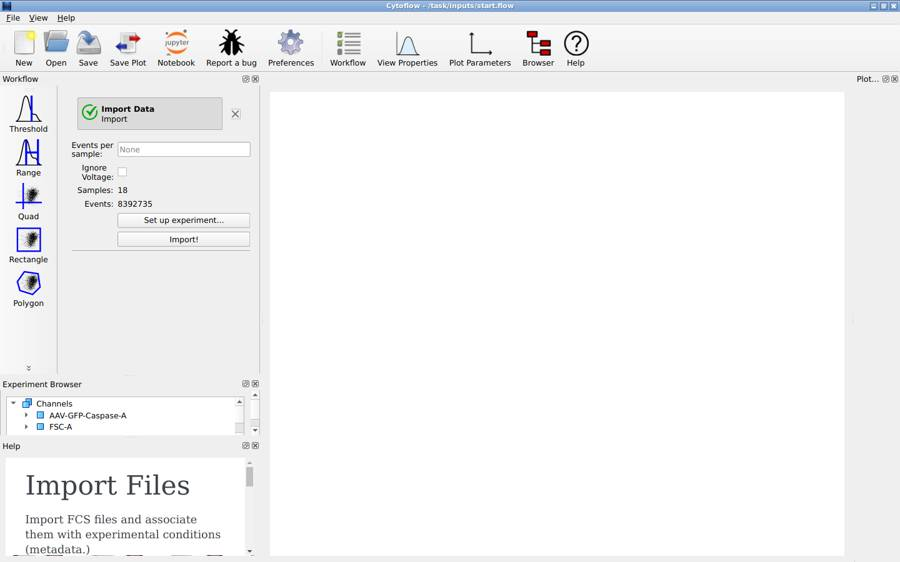
cu click 408 713; sleep 0.5; cu click 408 614; sleep 0.5; cu click 651 75; sleep 2; cu screenshot /tmp/screen.png
{
"file_path": "/tmp/screen.png"
}/tmp/screen.png
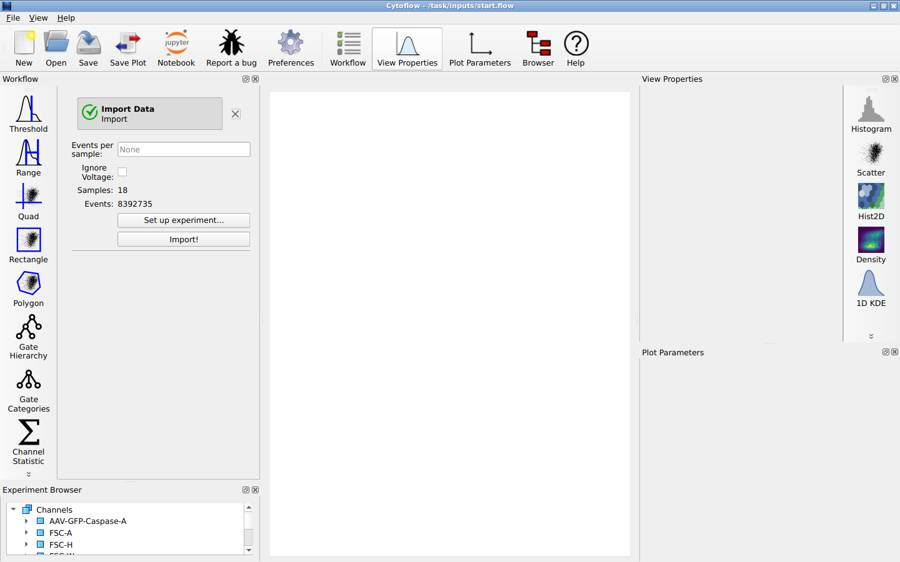
cu click 1393 390; sleep 3; cu screenshot /tmp/screen.png
{
"file_path": "/tmp/screen.png"
}/tmp/screen.png
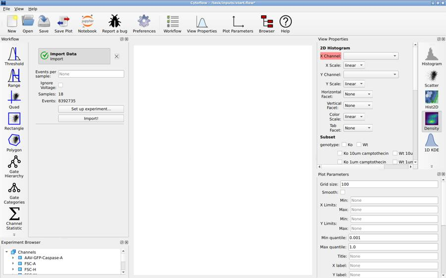
cu click 1196 181; sleep 1; cu screenshot /tmp/screen.png
{
"file_path": "/tmp/screen.png"
}/tmp/screen.png
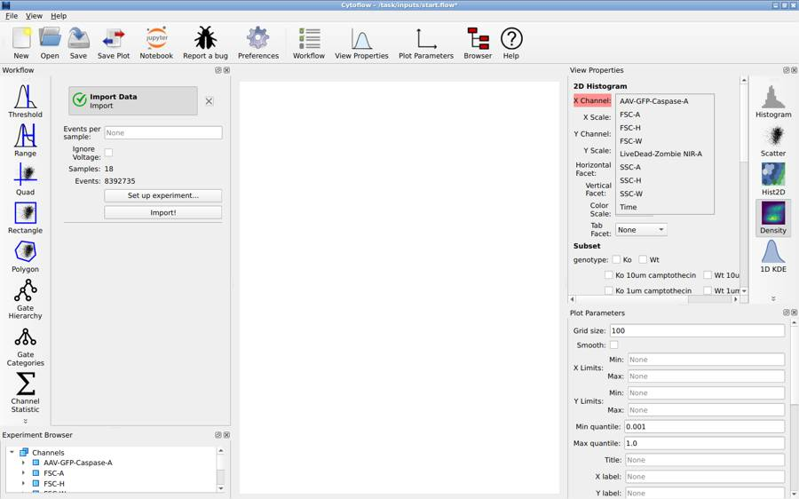
cu click 1136 206; sleep 1; cu click 1196 241; sleep 1; cu screenshot /tmp/screen.png
{
"file_path": "/tmp/screen.png"
}/tmp/screen.png
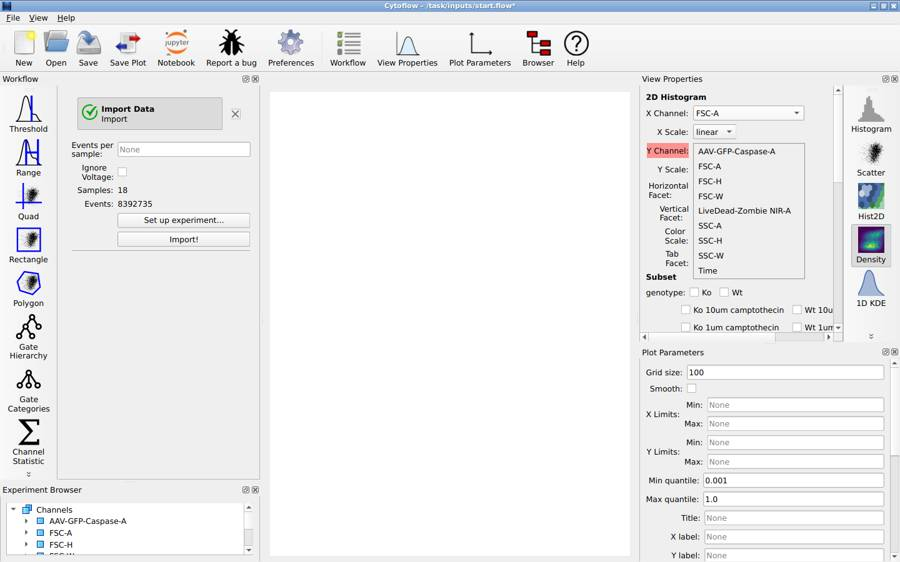
cu click 1136 361; sleep 25; cu screenshot /tmp/screen.png
{
"file_path": "/tmp/screen.png"
}/tmp/screen.png
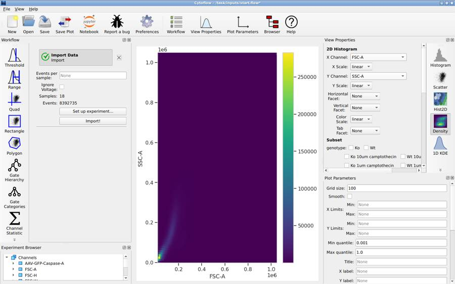
cu click 1143 211; sleep 1; cu screenshot /tmp/screen.png
{
"file_path": "/tmp/screen.png"
}/tmp/screen.png
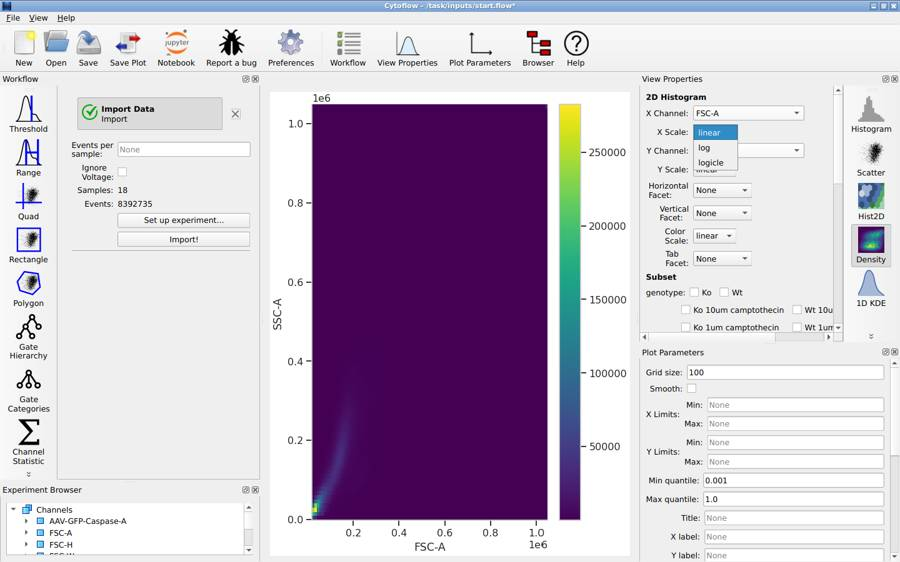
cu click 1127 236; sleep 2; cu click 1143 271; sleep 1; cu click 1127 296; sleep 2; cu click 1143 377; sleep 1; cu click 1127 402; sleep 30; cu screenshot /tmp/screen.png
{
"file_path": "/tmp/screen.png"
}/tmp/screen.png
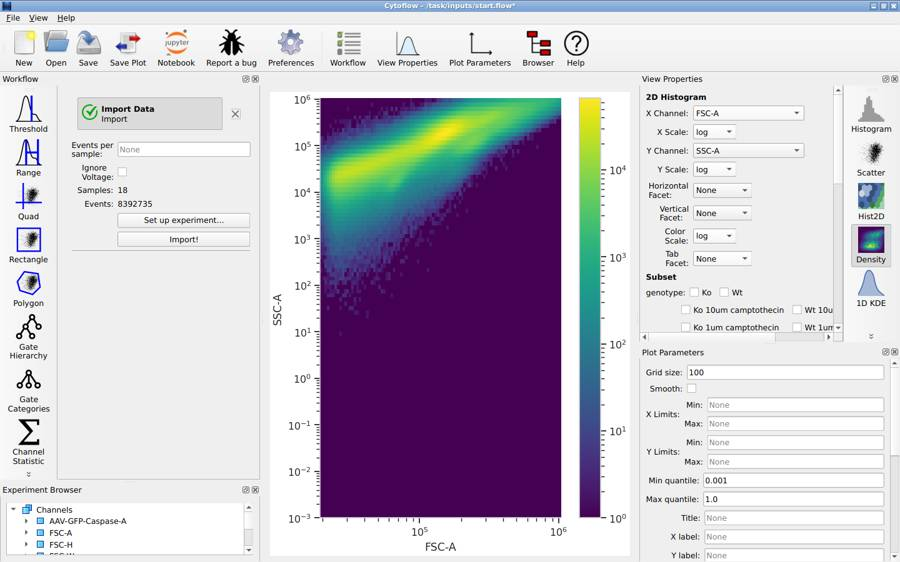
cu click 1272 708; cu type "2000"; cu key Return; sleep 25; cu screenshot /tmp/screen.png
{
"file_path": "/tmp/screen.png"
}/tmp/screen.png
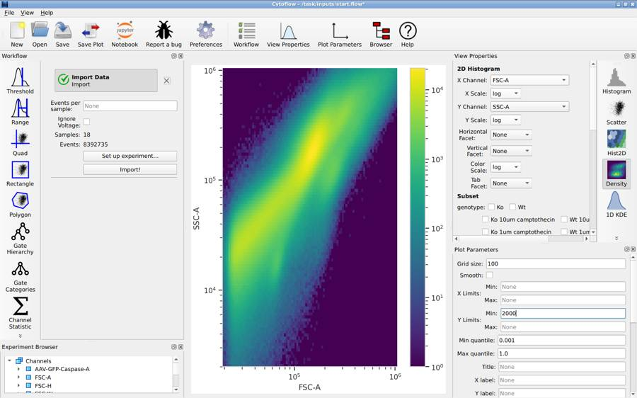
cd /opt/cytoflow/cytoflow-1.3.2/_internal/cytoflowgui/help/operations; for f in polygon threshold range channel_stat hierarchy category; do echo "== $f"; python3 -I -c "
import re,sys,html
t=open('$f.html').read()
t=re.sub(r'(?s)<script.*?</script>|<style.*?</style>','',t)
t=re.sub(r'<[^>]+>','',t)
t=html.unescape(t)
print(re.sub(r'\n\s*\n+','\n',t)[:2500])
"; done; ls ../views | grep html== polygon
Polygon Gate
Polygon Gate
Draw a polygon gate. To add vertices, use a single-click; to close the
polygon, click the first vertex a second time.
Name
The operation name. Used to name the new metadata field that’s created by
this module.
X Channel
The name of the channel on the gate’s X axis.
Y Channel
The name of the channel on the gate’s Y axis.
X Scale
The scale of the X axis for the interactive plot.
Y Scale
The scale of the Y axis for the interactive plot
Hue facet
Show different experimental conditions in different colors.
Subset
Show only a subset of the data.
== threshold
Threshold Gate
Threshold Gate
Draw a threshold gate. To set a new threshold, click on the plot.
Name
The operation name. Used to name the new metadata field that’s created by
this module.
Channel
The name of the channel to apply the gate to.
Threshold
The threshold of the gate.
Scale
The scale of the axis for the interactive plot
Hue facet
Show different experimental conditions in different colors.
Subset
Show only a subset of the data.
== range
Range Gate
Range Gate
Draw a range gate. To draw a new range, click-and-drag across the plot.
Name
The operation name. Used to name the new metadata field that’s created by
this module.
Channel
The name of the channel to apply the gate to.
Low
The low threshold of the gate.
High
The high threshold of the gate.
Scale
The scale of the axis for the interactive plot
Hue facet
Show different experimental conditions in different colors.
Subset
Show only a subset of the data.
== channel_stat
Channel statistic
Channel statistic
Apply a function to subsets of a data set, and add it as a statistic
to the experiment.
First, the module groups the data by the unique values of the variables
in By, then applies Function to the Channel in each group.
Name
The operation name. Becomes the new statistic’s name.
Channel
The channel to apply the function to.
Function
The function to compute on each group.
Subset
Only apply the function to a subset of the data. Useful if the function
is very slow.
== hierarchy
Hierarchical Gating
Hierarchical Gating
Convert a hierarchical (binary) gating strategy into a categorical condition.
Hierarchical gating strategies are quite common when doing manual gating.
For example, an 8-stain panel can separate monocytes into macrophages, B cells,
NK cells, NKT cells, T cells, DCs, and neutrophils – but then, because these
states are mutually exclusive, a reasonable question is “how much of each are there?”
Cytoflow can define these gates, but because it does not have any
concept of nested gates, plotting and analyzing this gating strategy can be
challenging.
The Hierarchical Gating operation converts a list of gates into a categorical
variable to enable straightforward analysis. For example, monocytes stained with CD64,
CD3 and CD19 can differentiate between macrophages and B cells. A user
defines a threshold gate to separate CD64+ cells (macrophages) from the
rest of the events, then they use a polygon gate to distinguish the CD19+/CD3-
cells (B cells) from everything else. The Hierarchical Gating operation can take these two gates
and create a categorical condition with the values Macrophages, B_Cells,
and Unknown.
The operation is set up by providing a list of conditions, values for those
conditions, and the category that condition indicates. Figuring out an
event’s category is done by evaluating the hierarchical gates in order.
For each event, the first condition/value pair is considered. If that event
has that value, its new category is set accordingly. If not, then the next
gate in the list is considered. If the event is a member in none of the gates,
it receives the category listed in the Default attribute.
Name
The name of the new condition that this operation creates.
Gates
The ordered list of gates that implement the gating hierarchy.
For each, you need to specify:
The name of the pre-existing condition
The value that the condition has to have to indicate membership
in this class.
The name of the new category.
Default
The name that unclassified events will have in the new categorical
condition.
== category
Categorical Gating
Categorical Gating
Convert a binary gating strategy into a categorical condition.
Binary gating strategies are quite common while doing manual gating.
For example, a gating strategy might be “if a monocyte is CD64-, CD19+,
and CD3-, then it is a B cell; if it is CD64+, it is a macrophage”.
Analyzing these data sets is often easier if one can specify a set of
gate memberships, for example making a categorical variable with the
values B_Cell and Macrophage.
If the gating strategy is strictly hierarchical, then you can use
Hierarchical Gating operation to accomplish this easily. For more
complicated situations, there is Categorical Gating. This operation
is configured with a list of subsets and the name to give each subset.
These subsets must be mutually exclusive, a requirement which is
enforced by the operation. A new categorical variable is then created,
whose categories are the names and each of which is applied to events
in the category’s subset.
Any event that is in none of the subsets is set to a default value, which
defaults to Unknown.
Name
The name of the new condition that this operation creates.
Subsets
The mutually exclusive subsets that will be assigned categories. For
each, you need to specify:
The name of the new category
The subset of events that should be assigned that category.
Default
The name that unclassified events will have in the new categorical
condition.
bar_chart.html
density.html
export_fcs.html
histogram.html
histogram_2d.html
kde_1d.html
kde_2d.html
long_table.html
matrix.html
mst.html
parallel_coords.html
radviz.html
scatterplot.html
stats_1d.html
stats_2d.html
table.html
violin.html
Shell cwd was reset to /taskcu click 45 460; sleep 2; cu screenshot /tmp/screen.png
{
"file_path": "/tmp/screen.png"
}/tmp/screen.png
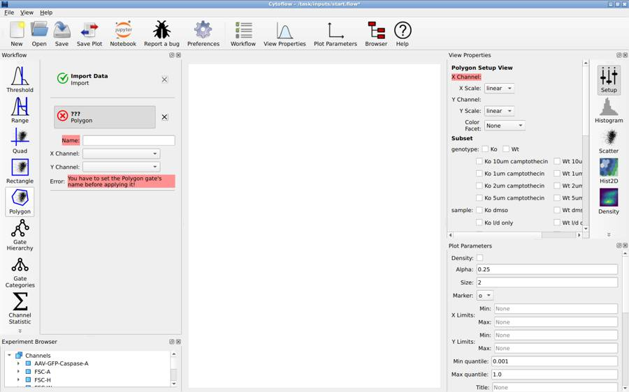
cu click 1098 592; sleep 1; cu click 294 322; cu type "cells"; cu key Return; sleep 1; cu click 277 353; sleep 1; cu screenshot /tmp/screen.png
{
"file_path": "/tmp/screen.png"
}/tmp/screen.png
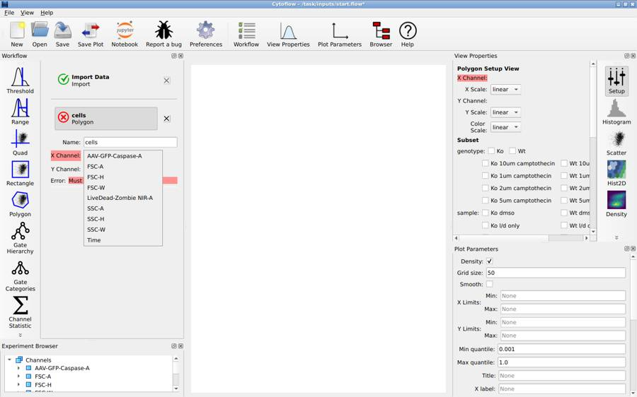
cu click 215 377; sleep 1; cu click 277 383; sleep 1; cu screenshot /tmp/s1.png; cu click 215 503; sleep 2; cu click 1143 288; sleep 1; cu click 1127 313; sleep 30; cu screenshot /tmp/screen.png
{
"file_path": "/tmp/screen.png"
}/tmp/s1.png /tmp/screen.png
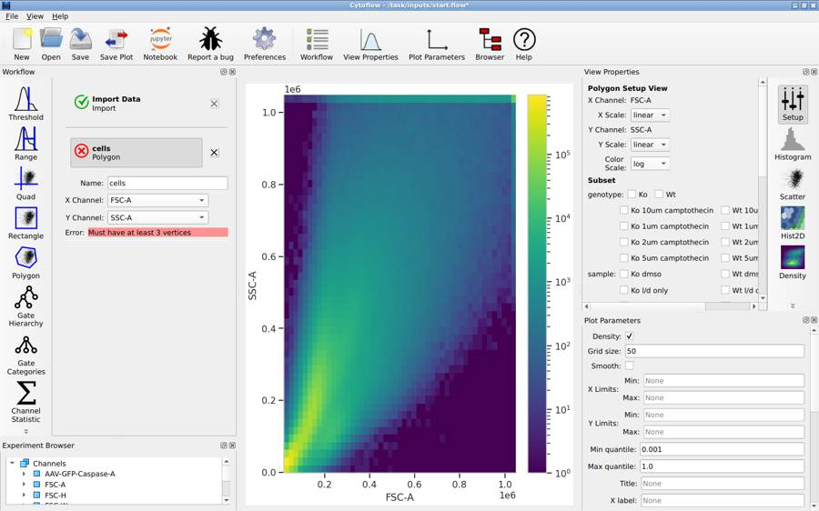
cu click 1255 618 double; cu key ctrl+a; cu type "100"; cu key Return; cu click 1272 700; cu type "600000"; cu key Return; cu click 1272 760; cu type "700000"; cu key Return; sleep 30; cu screenshot /tmp/screen.png
{
"file_path": "/tmp/screen.png"
}/tmp/screen.png
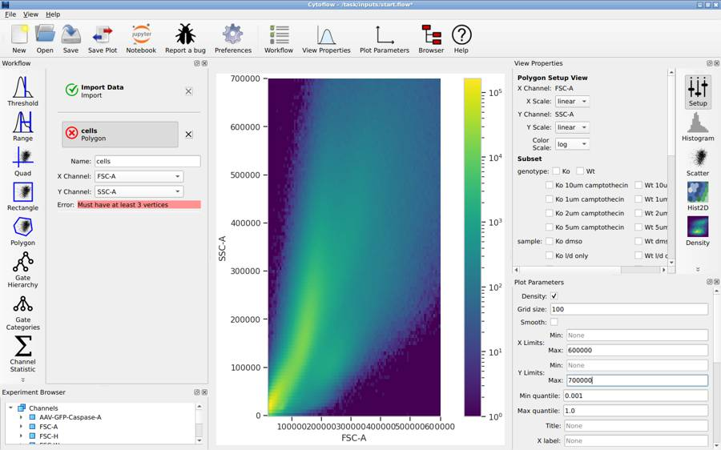
cu click 1143 288; sleep 1; cu click 1127 264; sleep 30; cu screenshot /tmp/screen.png
{
"file_path": "/tmp/screen.png"
}/tmp/screen.png
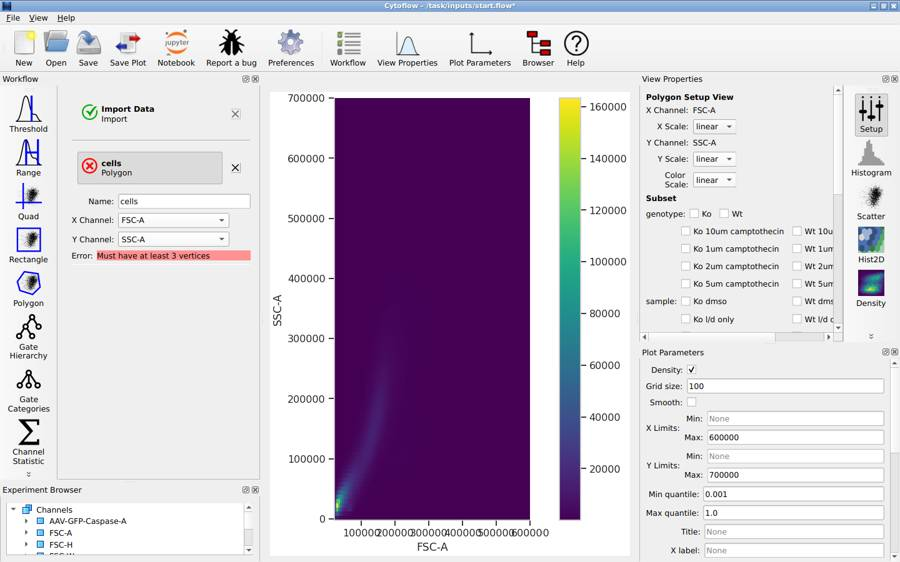
cu click 1143 202; sleep 1; cu click 1127 227; sleep 2; cu click 1143 254; sleep 1; cu click 1127 279; sleep 2; cu click 1143 288; sleep 1; cu click 1127 313; sleep 1; cu click 1272 700; cu key ctrl+a; cu key BackSpace; cu key Return; cu click 1272 760; cu key ctrl+a; cu key BackSpace; cu key Return; cu click 1272 730; cu type "3000"; cu key Return; sleep 35; cu screenshot /tmp/screen.png
{
"file_path": "/tmp/screen.png"
}/tmp/screen.png
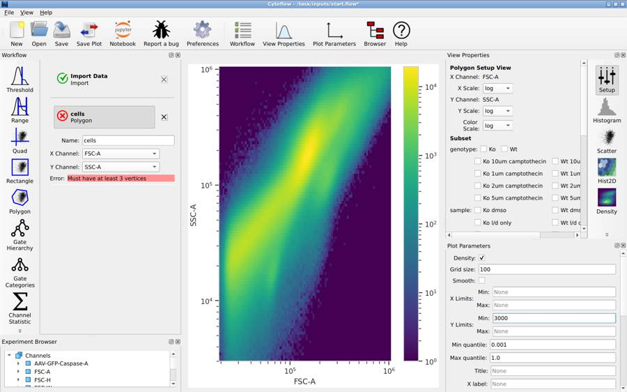
for p in "628 455" "640 340" "700 220" "790 172" "882 172" "885 270" "815 370" "730 480" "660 500" "628 455"; do cu click $p; sleep 1.5; done; sleep 20; cu screenshot /tmp/screen.png
{
"file_path": "/tmp/screen.png"
}/tmp/screen.png
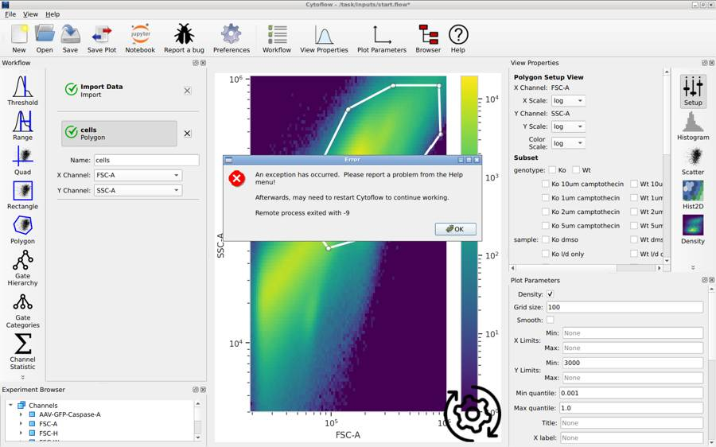
free -m; ps aux --sort=-rss | head -8 | cut -c1-200; dmesg 2>/dev/null | tail -5; cat /sys/fs/cgroup/memory.max 2>/dev/null; cat /sys/fs/cgroup/memory.current 2>/dev/null; nproc
total used free shared buff/cache available Mem: 7949 968 6924 15 322 6981 Swap: 0 0 0 USER PID %CPU %MEM VSZ RSS TTY STAT START TIME COMMAND cfapp 844 0.9 4.6 3593724 378520 ? Sl 18:46 0:05 /opt/cytoflow/cytoflow-1.3.2/cytoflow root 1029 1.1 2.7 5688524 221560 ? Sl 18:47 0:06 claude --verbose --output-format=stream-json --effort high --model claude-fable-5-2 --permission-mode=bypassPermissions --print root 817 0.0 0.4 233412 39880 ? S 18:46 0:00 Xvfb :1 -screen 0 1440x900x24 -nolisten tcp root 830 0.0 0.2 58956 23180 ? S 18:46 0:00 /usr/bin/python3 /usr/bin/websockify --web=/usr/share/novnc 6080 localhost:5900 cfapp 866 0.0 0.2 84344 22088 ? S 18:47 0:00 /opt/cytoflow/cytoflow-1.3.2/cytoflow -B -S -I -c from multiprocessing.resource_tracker import main;main(9) cfapp 937 0.0 0.1 5238904 14904 ? Sl 18:47 0:00 /opt/cytoflow/cytoflow-1.3.2/_internal/PyQt5/Qt5/libexec/QtWebEngineProcess --type=zygote --application-name=cytoflow --webengine-schem agent 837 0.0 0.1 142584 11232 ? Sl 18:46 0:00 openbox [ 561.594317] [ 1029] 0 1029 1422131 42388 42386 2 0 1249280 0 0 claude [ 561.594400] [ 1484] 0 1484 1224 93 91 2 0 49152 0 0 bash [ 561.594489] [ 1531] 0 1531 784 28 27 1 0 49152 0 0 sleep [ 561.594564] oom-kill:constraint=CONSTRAINT_NONE,nodemask=(null),cpuset=/,mems_allowed=0,global_oom,task_memcg=/,task=cytoflow,pid=868,uid=1002 [ 561.594719] Out of memory: Killed process 868 (cytoflow) total-vm:9121848kB, anon-rss:7303464kB, file-rss:8kB, shmem-rss:28kB, UID:1002 pgtables:14972kB oom_score_adj:0 4
ps -ef | head -40 | cut -c1-220; ls -la /task/outputs
UID PID PPID C STIME TTY TIME CMD root 1 0 0 18:46 ? 00:00:00 /__modal/runch-agent root 2 0 0 18:46 ? 00:00:00 [kthreadd] root 3 2 0 18:46 ? 00:00:00 [pool_workqueue_release] root 4 2 0 18:46 ? 00:00:00 [kworker/R-rcu_gp] root 5 2 0 18:46 ? 00:00:00 [kworker/R-sync_wq] root 6 2 0 18:46 ? 00:00:00 [kworker/R-kvfree_rcu_reclaim] root 7 2 0 18:46 ? 00:00:00 [kworker/R-slub_flushwq] root 8 2 0 18:46 ? 00:00:00 [kworker/R-netns] root 9 2 0 18:46 ? 00:00:00 [kworker/0:0-events] root 10 2 0 18:46 ? 00:00:00 [kworker/0:0H-kblockd] root 11 2 0 18:46 ? 00:00:00 [kworker/0:1-events_power_efficient] root 12 2 0 18:46 ? 00:00:00 [kworker/u16:0-events_unbound] root 13 2 0 18:46 ? 00:00:00 [kworker/R-mm_percpu_wq] root 14 2 0 18:46 ? 00:00:00 [ksoftirqd/0] root 15 2 0 18:46 ? 00:00:00 [rcu_sched] root 16 2 0 18:46 ? 00:00:00 [rcu_exp_par_gp_kthread_worker/0] root 17 2 0 18:46 ? 00:00:00 [rcu_exp_gp_kthread_worker] root 18 2 0 18:46 ? 00:00:00 [migration/0] root 19 2 0 18:46 ? 00:00:00 [cpuhp/0] root 20 2 0 18:46 ? 00:00:00 [cpuhp/1] root 21 2 0 18:46 ? 00:00:00 [migration/1] root 22 2 0 18:46 ? 00:00:00 [ksoftirqd/1] root 23 2 0 18:46 ? 00:00:00 [kworker/1:0-mm_percpu_wq] root 24 2 0 18:46 ? 00:00:00 [kworker/1:0H-kblockd] root 25 2 0 18:46 ? 00:00:00 [cpuhp/2] root 26 2 0 18:46 ? 00:00:00 [migration/2] root 27 2 0 18:46 ? 00:00:00 [ksoftirqd/2] root 28 2 0 18:46 ? 00:00:00 [kworker/2:0-events_long] root 29 2 0 18:46 ? 00:00:00 [kworker/2:0H-kblockd] root 30 2 0 18:46 ? 00:00:00 [cpuhp/3] root 31 2 0 18:46 ? 00:00:00 [migration/3] root 32 2 0 18:46 ? 00:00:00 [ksoftirqd/3] root 33 2 0 18:46 ? 00:00:00 [kworker/3:0-events] root 34 2 0 18:46 ? 00:00:00 [kworker/3:0H-kblockd] root 36 2 0 18:46 ? 00:00:00 [kworker/u16:1-ext4-rsv-conversion] root 38 2 0 18:46 ? 00:00:00 [kworker/u16:3-writeback] root 39 2 0 18:46 ? 00:00:00 [kdevtmpfs] root 40 2 0 18:46 ? 00:00:00 [kworker/R-inet_frag_wq] root 41 2 0 18:46 ? 00:00:00 [rcu_tasks_kthread] total 8 drwxrwsrwx 2 agent task 4096 Nov 5 22:25 . drwxr-xr-x 4 root root 4096 Nov 5 22:25 ..
ps -eo pid,ppid,user,etime,cmd | grep -v "\[" | cut -c1-250
PID PPID USER ELAPSED CMD
1 0 root 09:56 /__modal/runch-agent
809 1 root 09:56 /usr/bin/tini -- /entrypoint.sh sh -c sleep infinity
812 809 root 09:56 /bin/bash /entrypoint.sh sh -c sleep infinity
817 812 root 09:56 Xvfb :1 -screen 0 1440x900x24 -nolisten tcp
828 812 root 09:56 /bin/bash /entrypoint.sh sh -c sleep infinity
829 812 root 09:56 x11vnc -display :1 -forever -shared -nopw -quiet -rfbport 5900
830 812 root 09:56 /usr/bin/python3 /usr/bin/websockify --web=/usr/share/novnc 6080 localhost:5900
832 828 root 09:56 runuser -u agent -- env DISPLAY=:1 HOME=/home/agent LANG=C.UTF-8 LC_ALL=C.UTF-8 openbox
835 812 root 09:56 /bin/bash /entrypoint.sh sh -c sleep infinity
836 835 root 09:56 runuser -u cfapp -- env DISPLAY=:1 HOME=/home/cfapp XDG_RUNTIME_DIR=/tmp/runtime-cfapp LANG=C.UTF-8 LC_ALL=C.UTF-8 bash -c umask 002; cd /task; exec start-cytoflow
837 832 agent 09:56 openbox
838 836 cfapp 09:56 /bin/bash /usr/local/bin/start-cytoflow
844 838 cfapp 09:56 /opt/cytoflow/cytoflow-1.3.2/cytoflow
866 844 cfapp 09:46 /opt/cytoflow/cytoflow-1.3.2/cytoflow -B -S -I -c from multiprocessing.resource_tracker import main;main(9)
899 844 cfapp 09:39 /opt/cytoflow/cytoflow-1.3.2/_internal/PyQt5/Qt5/libexec/QtWebEngineProcess --type=zygote --no-zygote-sandbox --application-name=cytoflow --webengine-schemes=qrc:sLV --lang=en
920 844 cfapp 09:39 /opt/cytoflow/cytoflow-1.3.2/_internal/PyQt5/Qt5/libexec/QtWebEngineProcess --type=zygote --application-name=cytoflow --webengine-schemes=qrc:sLV --lang=en
922 920 cfapp 09:39 /opt/cytoflow/cytoflow-1.3.2/_internal/PyQt5/Qt5/libexec/QtWebEngineProcess --type=zygote --application-name=cytoflow --webengine-schemes=qrc:sLV --lang=en
937 922 cfapp 09:39 /opt/cytoflow/cytoflow-1.3.2/_internal/PyQt5/Qt5/libexec/QtWebEngineProcess --type=zygote --application-name=cytoflow --webengine-schemes=qrc:sLV --lang=en
1027 1 root 09:25 su root -s /bin/bash -c set -o pipefail; export PATH=$HOME/.local/bin:$PATH; cd /task; IS_SANDBOX=1 CLAUDE_CODE_MAX_OUTPUT_TOKENS=128000 ANTHROPIC_MODEL=claude-fable-5-2 CLAUDE_CODE_EFFORT_LEVEL=high claude --verbose
1028 1027 root 09:25 bash -c set -o pipefail; export PATH=$HOME/.local/bin:$PATH; cd /task; IS_SANDBOX=1 CLAUDE_CODE_MAX_OUTPUT_TOKENS=128000 ANTHROPIC_MODEL=claude-fable-5-2 CLAUDE_CODE_EFFORT_LEVEL=high claude --verbose --output-format=
1029 1028 root 09:25 claude --verbose --output-format=stream-json --effort high --model claude-fable-5-2 --permission-mode=bypassPermissions --print
1554 1553 root 00:00 ps -eo pid,ppid,user,etime,cmd
1556 1553 root 00:00 cut -c1-250cat /usr/local/bin/start-cytoflow; sed -n 1,80p /entrypoint.sh
#!/bin/bash
# Launch Cytoflow full-screen-ish; restart it if the agent closes it.
BIN=$(find /opt/cytoflow -maxdepth 3 -type f -name 'cytoflow' -perm -u+x | head -1)
[ -z "$BIN" ] && { echo "cytoflow binary not found under /opt/cytoflow"; exit 1; }
while true; do
"$BIN" >/tmp/cytoflow.log 2>&1
sleep 1
done
#!/bin/bash
# Starts: virtual screen -> window manager -> VNC/noVNC (for human viewing) -> Cytoflow.
set -e
# Locale must reach the GUI process explicitly (Modal does not propagate image ENV through runuser);
# without it Qt pops "failed to create compose table" and swallows keystrokes.
export LANG=C.UTF-8 LC_ALL=C.UTF-8
if [ "${OFFLINE:-1}" = "1" ]; then
# Block all outbound traffic except replies to inbound connections (so noVNC viewing still works).
if iptables -P OUTPUT DROP 2>/dev/null; then
iptables -A OUTPUT -o lo -j ACCEPT
iptables -A OUTPUT -m state --state ESTABLISHED,RELATED -j ACCEPT
echo "[env] offline mode: outbound network blocked"
else
echo "[env] WARNING: could not block network (run with --cap-add NET_ADMIN)"
fi
fi
# Bind-mounted outputs folder: make it writable by both the agent and the Cytoflow user.
chown agent:task /task/outputs 2>/dev/null; chmod 2777 /task/outputs 2>/dev/null || true
as_agent() { runuser -u agent -- env DISPLAY=$DISPLAY HOME=/home/agent LANG=$LANG LC_ALL=$LC_ALL "$@"; }
Xvfb $DISPLAY -screen 0 $SCREEN_GEOMETRY -nolisten tcp &
for i in $(seq 1 50); do xdpyinfo -display $DISPLAY >/dev/null 2>&1 && break; sleep 0.2; done
as_agent openbox &
x11vnc -display $DISPLAY -forever -shared -nopw -quiet -rfbport 5900 &
websockify --web=/usr/share/novnc 6080 localhost:5900 >/dev/null 2>&1 &
echo "[env] watch the screen at http://localhost:6080/vnc.html?autoconnect=1&resize=scale"
as_cfapp() { runuser -u cfapp -- env DISPLAY=$DISPLAY HOME=/home/cfapp XDG_RUNTIME_DIR=/tmp/runtime-cfapp LANG=$LANG LC_ALL=$LC_ALL "$@"; }
mkdir -p /tmp/runtime-cfapp && chown cfapp /tmp/runtime-cfapp && chmod 700 /tmp/runtime-cfapp
# umask 002: files Cytoflow saves into /task/outputs stay readable/writable by the agent.
# cd /task: Cytoflow's open/save dialogs start in the task folder.
as_cfapp bash -c "umask 002; cd /task; exec start-cytoflow" &
waitcu click 915 461; sleep 1; cu click 20 29; sleep 1; cu screenshot /tmp/screen.png
{
"file_path": "/tmp/screen.png"
}/tmp/screen.png
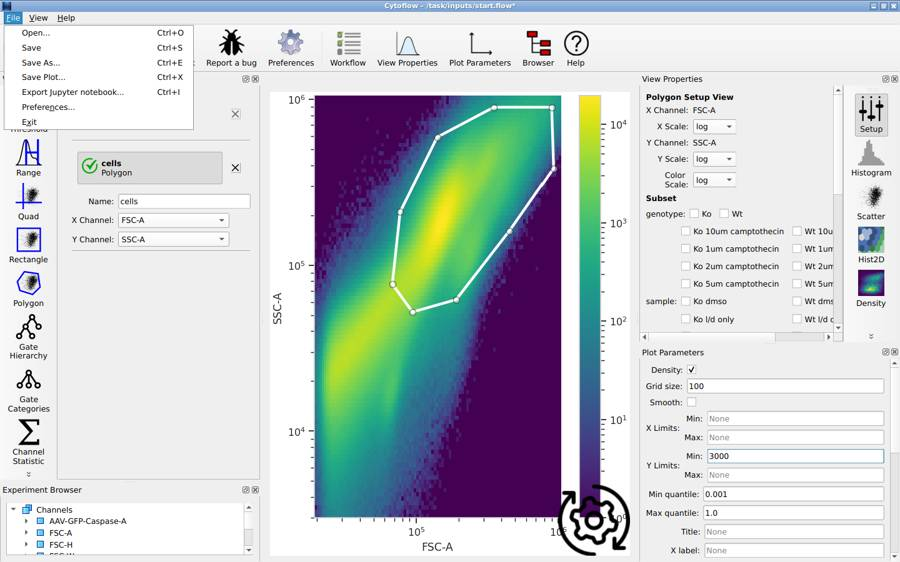
cu click 65 100; sleep 2; cu screenshot /tmp/screen.png
{
"file_path": "/tmp/screen.png"
}/tmp/screen.png
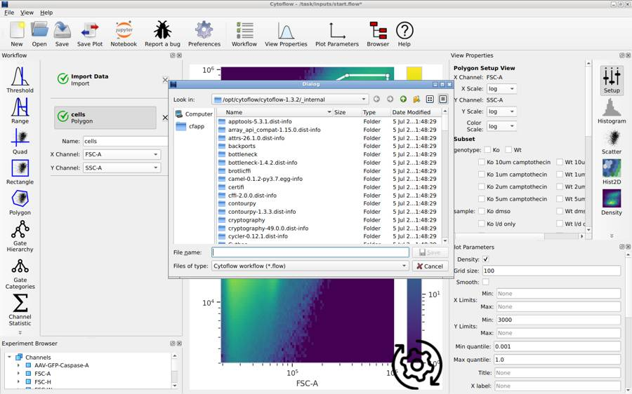
cu click 706 576; cu paste "/task/outputs/workflow.flow"; sleep 0.5; cu key Return; sleep 3; cu screenshot /tmp/screen.png; ls -la /task/outputs; grep -n -A30 "polygon" /task/outputs/workflow.flow | head -80
/tmp/screen.png total 32 drwxrwsrwx 2 agent task 4096 Nov 10 18:57 . drwxr-xr-x 4 root root 4096 Nov 5 22:25 .. -rw-rw-r-- 1 cfapp task 23347 Nov 10 18:57 workflow.flow 784: current_view: &id003 !polygon-view;3 785- current_plot: null 786- huefacet: '' 787- huescale: log 788: op: &id002 !polygon;1 789- name: cells 790- vertices: 791- - !!python/tuple 792- - 67933.09949228985 793- - 76999.65947250045 794- - !!python/tuple 795- - 77131.22719465419 796- - 209532.9004366965 797- - !!python/tuple 798- - 140989.60526455208 799- - 591129.7205557071 800- - !!python/tuple 801- - 354010.3635738766 802- - 895065.92379166 803- - !!python/tuple 804- - 898339.6981270488 805- - 895065.92379166 806- - !!python/tuple 807- - 927316.0884417722 808- - 383421.9678827957 809- - !!python/tuple 810- - 456366.33336579107 811- - 161311.5206431754 812- - !!python/tuple 813- - 191629.95095305273 814- - 62013.45138577055 815- - !!python/tuple 816- - 94308.14278922392 817- - 52247.67136284202 818- xchannel: FSC-A -- 822: plot_params: !polygon-params;1 823- alpha: 0.25 824- col_wrap: null 825- density: true 826- despine: true 827- gridsize: 100 828- huelabel: '' 829- legend: true 830- marker: o 831- max_quantile: 1.0 832- min_quantile: 0.001 833- s: 2 834- sharex: true 835- sharey: true 836- smoothed: false 837- smoothed_sigma: 1.0 838- sns_context: notebook 839- sns_style: whitegrid 840- title: '' 841- xlabel: '' 842- xlim: !!python/tuple 843- - null 844- - null 845- ylabel: '' 846- ylim: !!python/tuple 847- - 3000.0 848- - null 849- subset_list: 850- - !category-subset;1 851- name: genotype 852- selected: []
cu click 20 29; sleep 1; cu click 46 195; sleep 3; cu screenshot /tmp/screen.png
{
"file_path": "/tmp/screen.png"
}/tmp/screen.png

thinking
Cytoflow crashed from running out of memory, but the cells gate is saved to /task/outputs/workflow.flow. Once it restarts, I'll reopen the workflow with a smaller event sample to draw the gate.
sleep 20; cu screenshot /tmp/screen.png; ps -eo pid,rss,etime,cmd | grep cytoflow | grep -v grep | cut -c1-120
{
"file_path": "/tmp/screen.png"
}/tmp/screen.png 836 328 11:22 runuser -u cfapp -- env DISPLAY=:1 HOME=/home/cfapp XDG_RUNTIME_DIR=/tmp/runtime-cfapp LANG=C.UT 838 2040 11:22 /bin/bash /usr/local/bin/start-cytoflow 866 0 11:12 [cytoflow] <defunct> 1624 522316 00:26 /opt/cytoflow/cytoflow-1.3.2/cytoflow 1637 39432 00:24 /opt/cytoflow/cytoflow-1.3.2/cytoflow -B -S -I -c from multiprocessing.resource_tracker import m 1639 314556 00:24 /opt/cytoflow/cytoflow-1.3.2/cytoflow --multiprocessing-fork tracker_fd=10 pipe_handle=14 1665 47620 00:21 /opt/cytoflow/cytoflow-1.3.2/_internal/PyQt5/Qt5/libexec/QtWebEngineProcess --type=zygote --no-z 1686 47872 00:21 /opt/cytoflow/cytoflow-1.3.2/_internal/PyQt5/Qt5/libexec/QtWebEngineProcess --type=zygote --appl 1688 10940 00:21 /opt/cytoflow/cytoflow-1.3.2/_internal/PyQt5/Qt5/libexec/QtWebEngineProcess --type=zygote --appl 1703 72228 00:21 /opt/cytoflow/cytoflow-1.3.2/_internal/PyQt5/Qt5/libexec/QtWebEngineProcess --type=zygote --appl
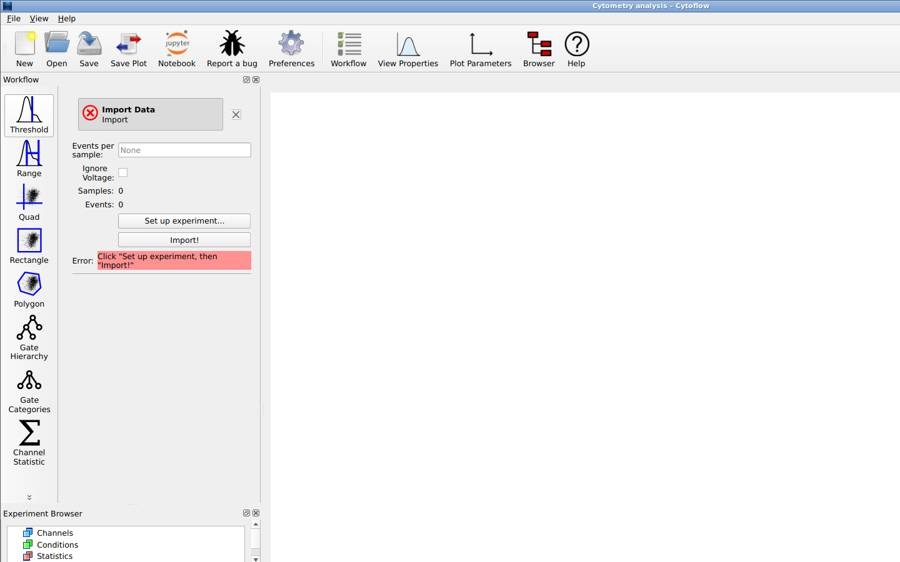
cu click 600 9 double; sleep 2; cu key ctrl+o; sleep 2; cu paste "/task/outputs/workflow.flow"; sleep 0.5; cu key Return; sleep 3; cu screenshot /tmp/screen.png
{
"file_path": "/tmp/screen.png"
}/tmp/screen.png

cu click 828 427; sleep 2; cu click 408 713; sleep 1; cu click 240 181; sleep 2; cu screenshot /tmp/screen.png
{
"file_path": "/tmp/screen.png"
}/tmp/screen.png
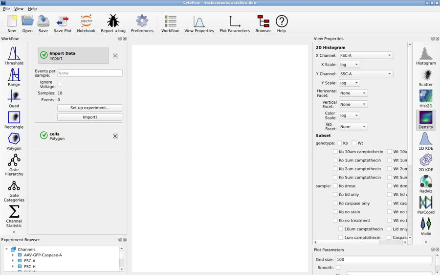
cu click 294 239; cu type "30000"; cu key Return; sleep 1; cu click 294 383; sleep 25; cu screenshot /tmp/screen.png; ps -eo pid,rss,cmd | grep "multiprocessing-fork" | grep -v grep | cut -c1-80
{
"file_path": "/tmp/screen.png"
}/tmp/screen.png 1639 494544 /opt/cytoflow/cytoflow-1.3.2/cytoflow --multiprocessing-fork tracke
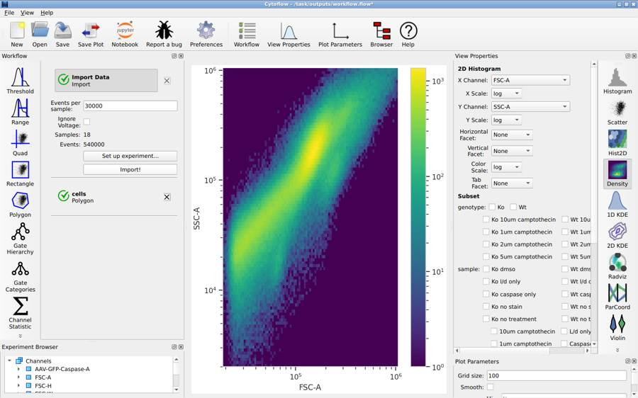
cu click 1155 304; sleep 1; cu screenshot /tmp/screen.png
{
"file_path": "/tmp/screen.png"
}/tmp/screen.png
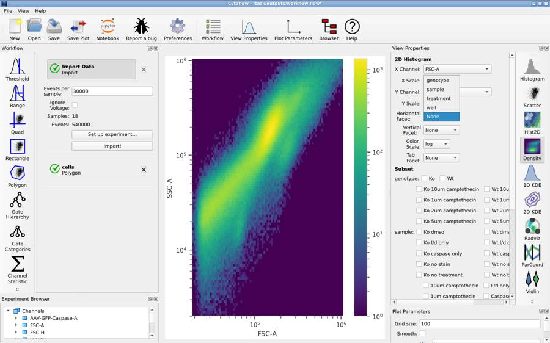
cu click 1148 258; sleep 2; cu click 1155 341; sleep 1; cu click 1146 246; sleep 12; cu screenshot /tmp/screen.png
{
"file_path": "/tmp/screen.png"
}/tmp/screen.png
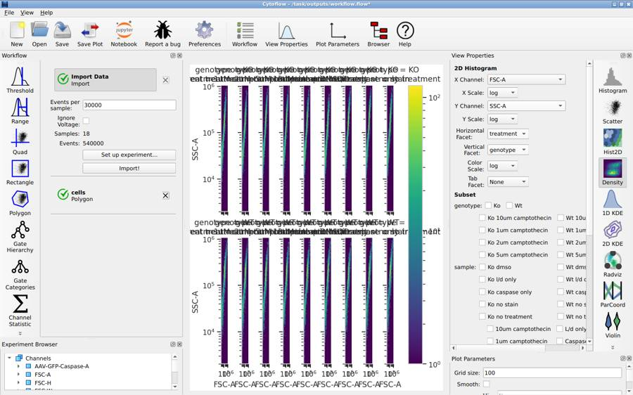
cu scroll 1230 860 down 10; sleep 1; cu screenshot /tmp/screen.png
{
"file_path": "/tmp/screen.png"
}/tmp/screen.png
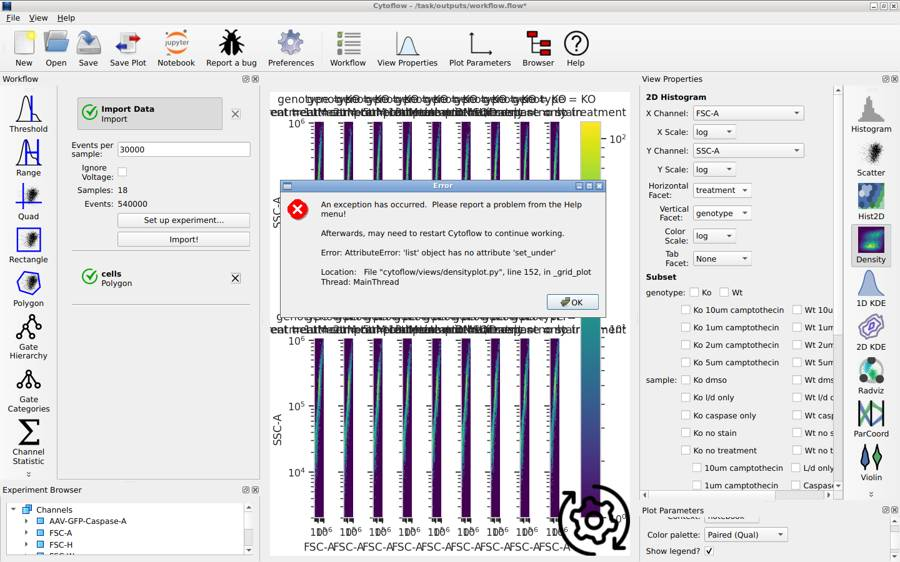
cu click 915 484; sleep 1; cu click 1194 856; sleep 1; cu screenshot /tmp/screen.png
{
"file_path": "/tmp/screen.png"
}/tmp/screen.png
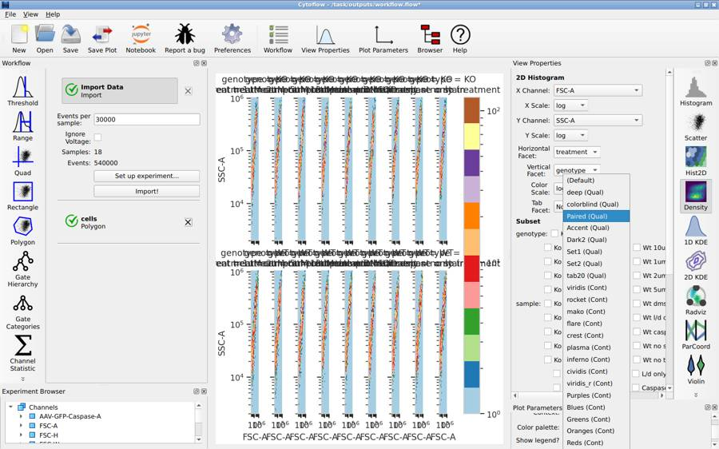
cu click 1162 361; sleep 2; cu drag 1232 803 1232 380; sleep 2; cu screenshot /tmp/screen.png
{
"file_path": "/tmp/screen.png"
}/tmp/screen.png
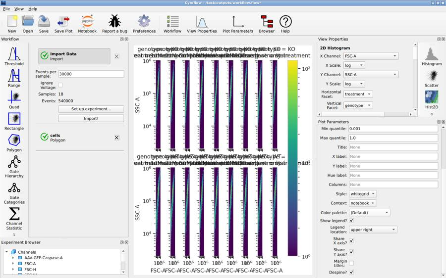
cu click 1155 341; sleep 1; cu screenshot /tmp/s1.png;
{
"file_path": "/tmp/s1.png"
}/tmp/s1.png
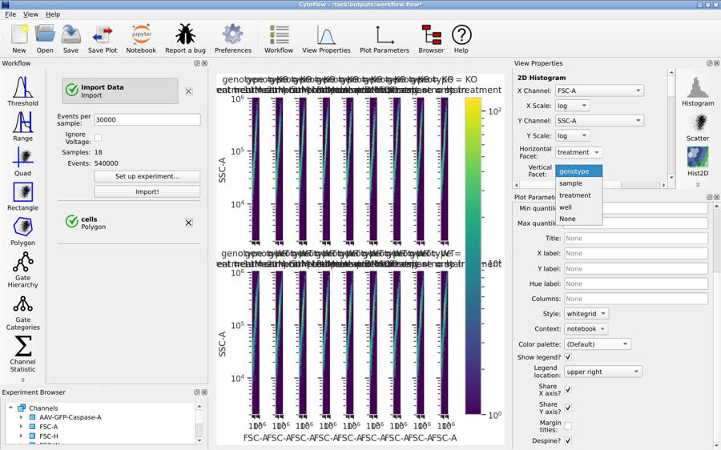
cu click 1133 438; sleep 2; cu click 1155 304; sleep 1; cu click 1140 377; sleep 2; cu click 1270 597; cu type "6"; cu key Return; sleep 2; cu click 557 75; sleep 15; cu screenshot /tmp/screen.png
{
"file_path": "/tmp/screen.png"
}/tmp/screen.png
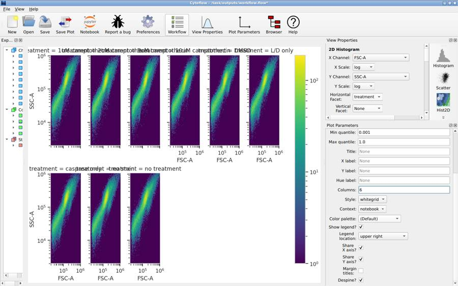
cu click 1155 304; sleep 1; cu screenshot /tmp/s1.png
{
"file_path": "/tmp/s1.png"
}/tmp/s1.png
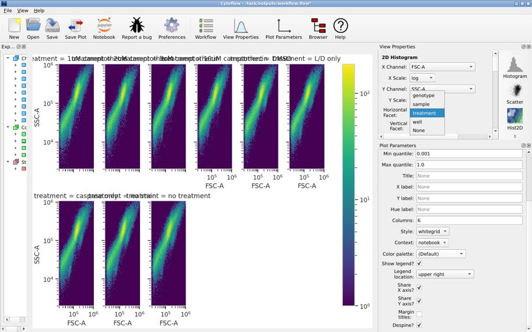
cu click 1130 330; sleep 15; cu screenshot /tmp/screen.png
{
"file_path": "/tmp/screen.png"
}/tmp/screen.png
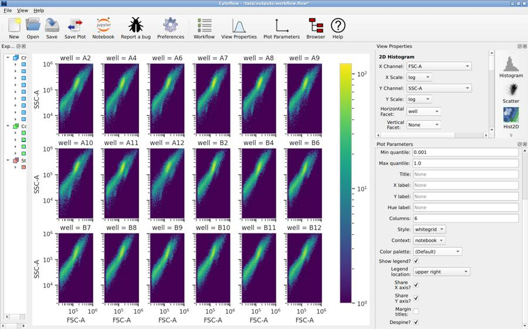
cu click 557 75; sleep 2; cu screenshot /tmp/screen.png
{
"file_path": "/tmp/screen.png"
}/tmp/screen.png
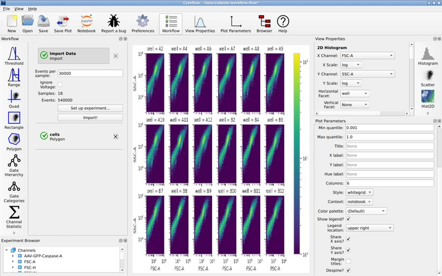
cu click 240 445; sleep 6; cu click 45 460; sleep 3; cu screenshot /tmp/screen.png
{
"file_path": "/tmp/screen.png"
}/tmp/screen.png
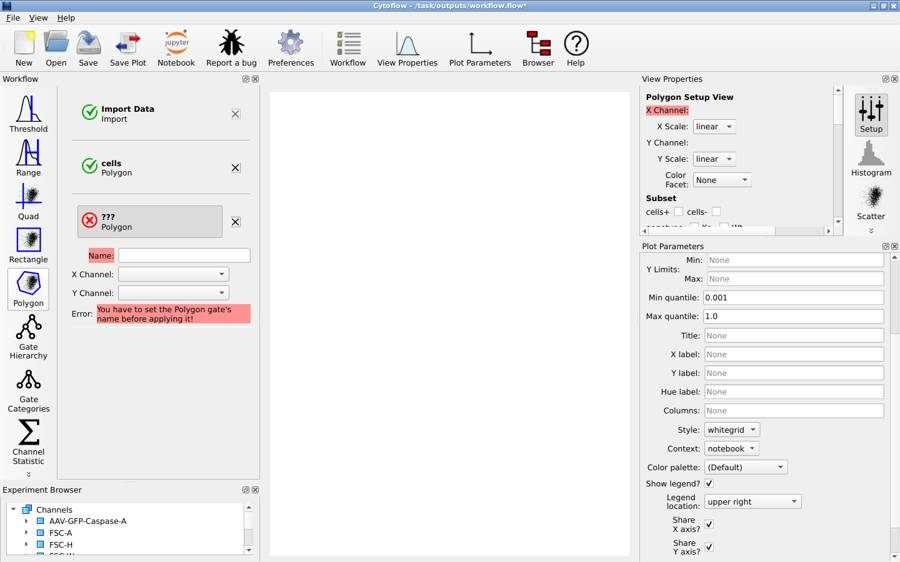
cu drag 1232 380 1232 600; sleep 1; cu click 294 409; cu type "singlets"; cu key Return; sleep 1; cu click 277 439; sleep 1; cu click 215 463; sleep 1; cu click 277 469; sleep 1; cu screenshot /tmp/screen.png
{
"file_path": "/tmp/screen.png"
}/tmp/screen.png
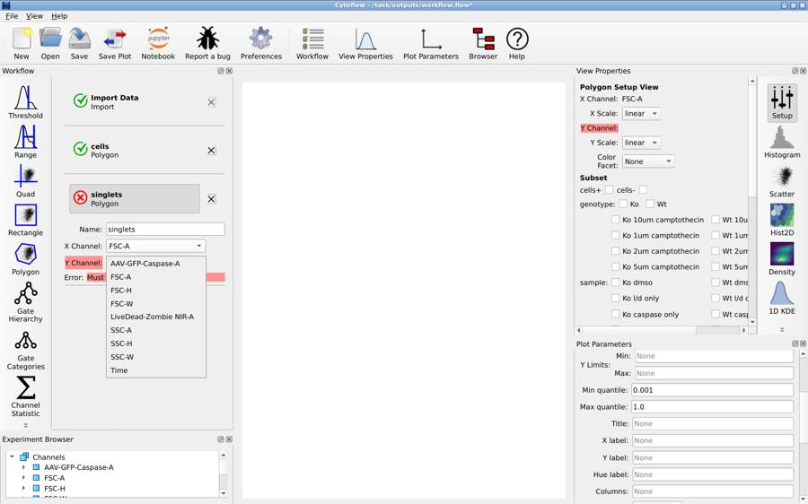
cu click 215 518; sleep 1; cu click 1086 339; sleep 1; cu drag 1431 665 1431 560; sleep 3; cu screenshot /tmp/screen.png
{
"file_path": "/tmp/screen.png"
}/tmp/screen.png
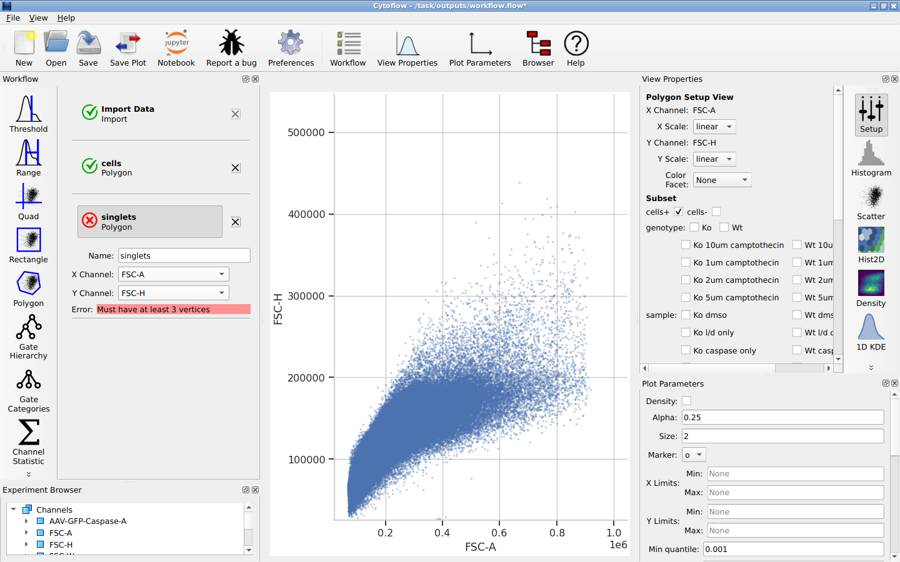
cu click 1098 642; sleep 3; cu click 1143 288; sleep 1; cu click 1127 313; sleep 6; cu screenshot /tmp/screen.png
{
"file_path": "/tmp/screen.png"
}/tmp/screen.png
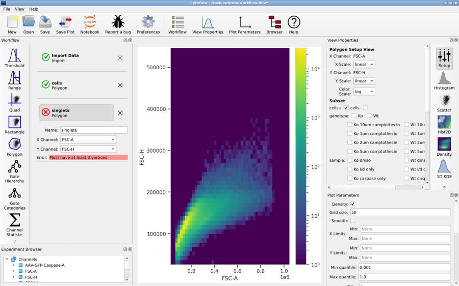
cu click 1255 668 double; cu key ctrl+a; cu type "100"; cu key Return; cu click 1272 750; cu type "600000"; cu key Return; cu click 1272 810; cu type "300000"; cu key Return; sleep 8; cu screenshot /tmp/screen.png
{
"file_path": "/tmp/screen.png"
}/tmp/screen.png
for p in "555 815" "572 660" "600 575" "640 480" "700 400" "760 385" "750 450" "680 540" "632 640" "592 760" "580 815" "555 815"; do cu click $p; sleep 1.2; done; sleep 8; cu screenshot /tmp/screen.png; ps -eo rss,cmd | grep "multiprocessing-fork" | grep -v grep | cut -c1-30
{
"file_path": "/tmp/screen.png"
}/tmp/screen.png 542824 /opt/cytoflow/cytoflow-
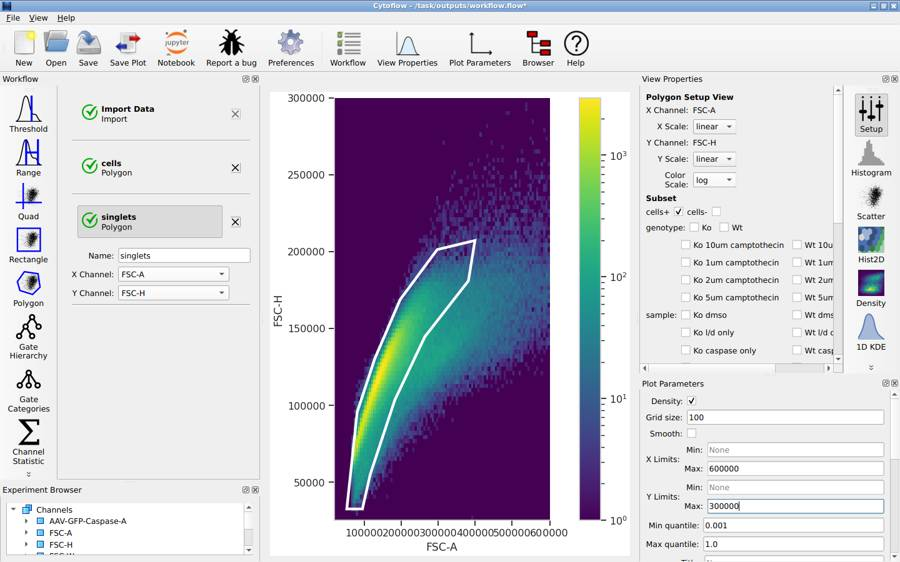
cu click 45 250; sleep 3; cu screenshot /tmp/screen.png
{
"file_path": "/tmp/screen.png"
}/tmp/screen.png
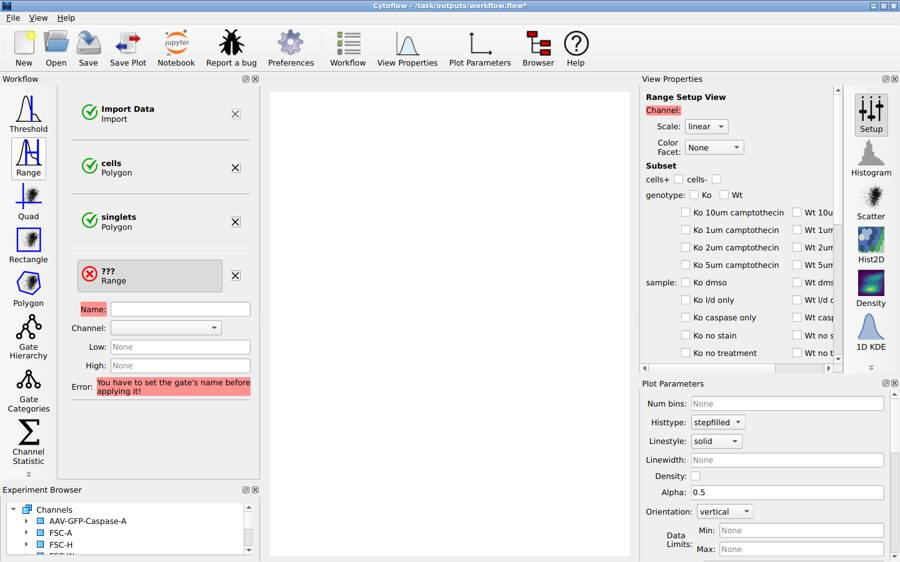
cu click 288 495; cu type "live"; cu key Return; sleep 1; cu click 265 525; sleep 1; cu screenshot /tmp/s1.png
{
"file_path": "/tmp/s1.png"
}/tmp/s1.png
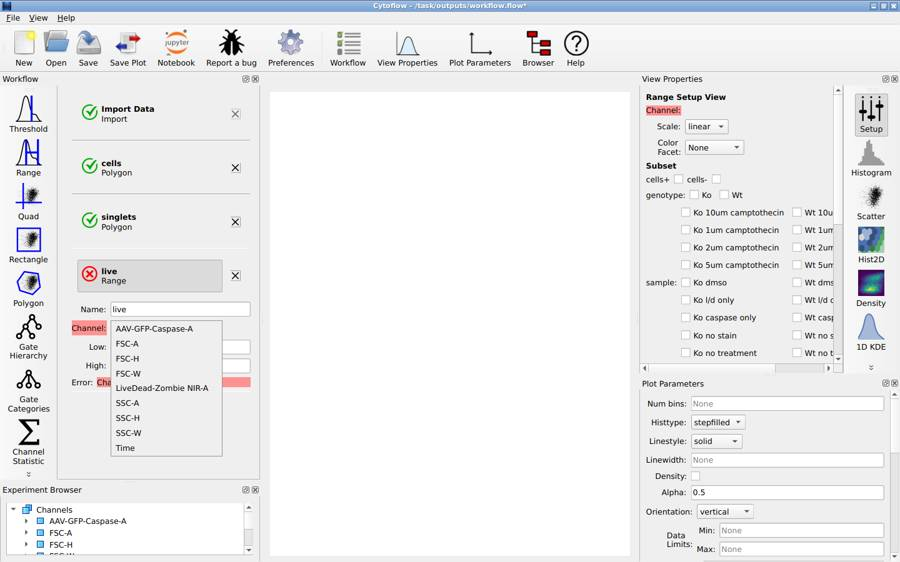
cu click 259 621; sleep 1; cu click 1086 287; sleep 1; cu click 1130 202; sleep 1; cu click 1125 251; sleep 2; cu drag 1341 250 1341 560; sleep 5; cu screenshot /tmp/screen.png
{
"file_path": "/tmp/screen.png"
}/tmp/screen.png
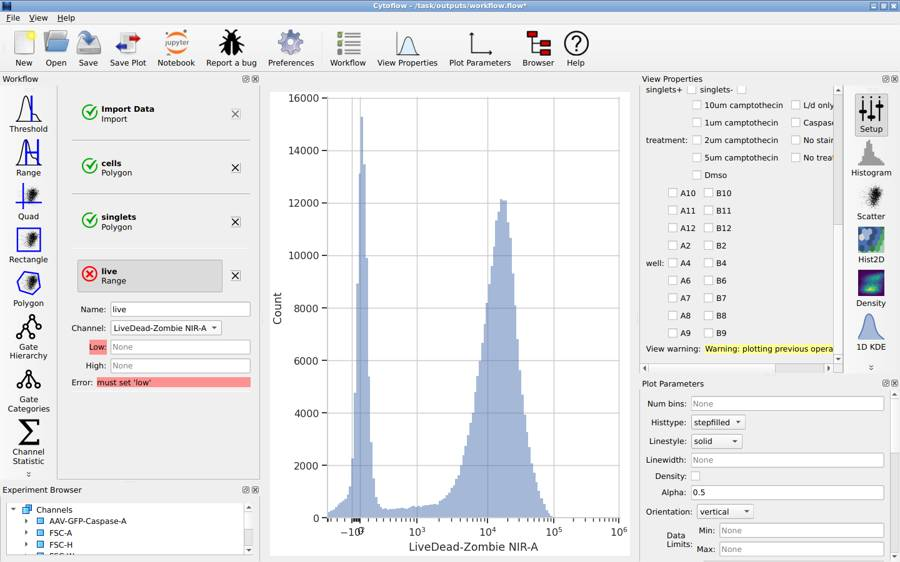
cu click 1106 143; sleep 3; cu click 1393 250; sleep 3; cu screenshot /tmp/screen.png
{
"file_path": "/tmp/screen.png"
}/tmp/screen.png
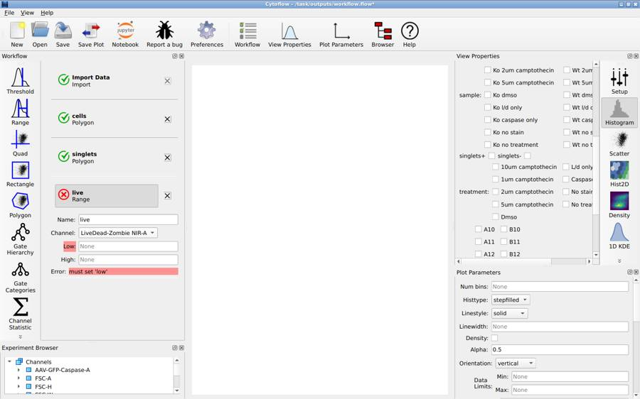
cu drag 1341 300 1341 100; sleep 2; cu screenshot /tmp/screen.png
{
"file_path": "/tmp/screen.png"
}/tmp/screen.png
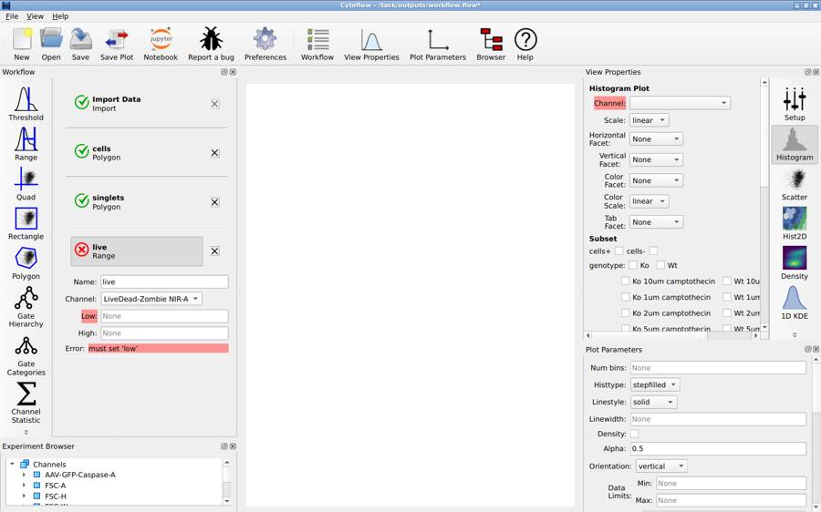
cu click 1190 181; sleep 1; cu click 1190 277; sleep 2; cu click 1136 211; sleep 1; cu click 1130 260; sleep 2; cu click 1086 441; sleep 2; cu click 1150 244; sleep 1; cu screenshot /tmp/screen.png
{
"file_path": "/tmp/screen.png"
}/tmp/screen.png
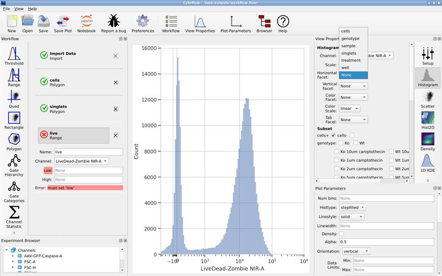
cu click 1125 220; sleep 3; cu drag 1431 660 1431 760; sleep 1; cu screenshot /tmp/s1.png
{
"file_path": "/tmp/s1.png"
}/tmp/s1.png
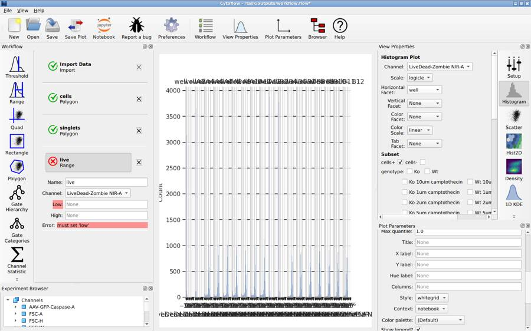
cu click 1270 779; cu type "6"; cu key Return; sleep 1; cu click 557 75; sleep 10; cu screenshot /tmp/screen.png
{
"file_path": "/tmp/screen.png"
}/tmp/screen.png
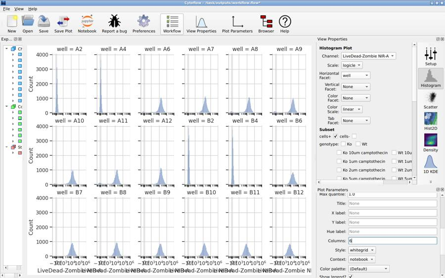
cu click 1393 460; sleep 3; cu screenshot /tmp/screen.png
{
"file_path": "/tmp/screen.png"
}/tmp/screen.png
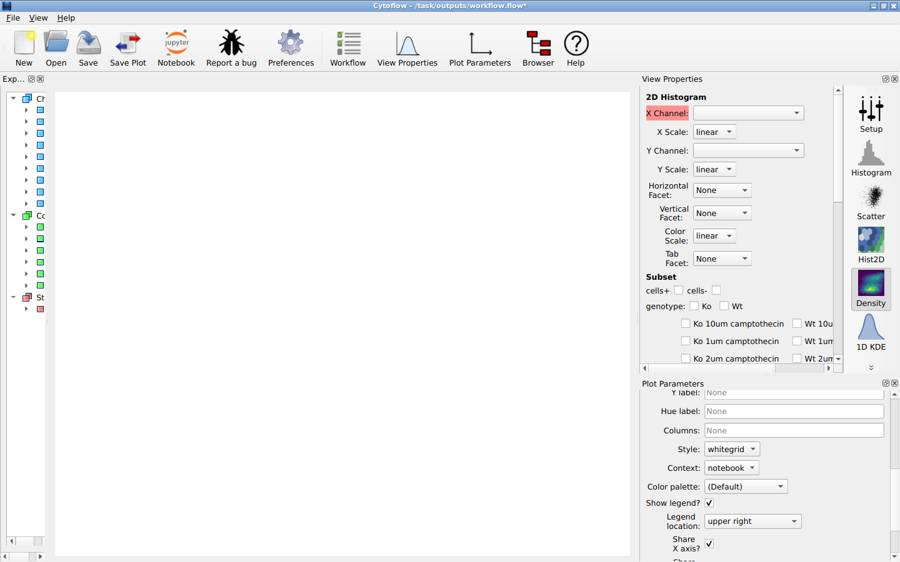
cu click 1270 689; cu type "6"; cu key Return; sleep 1; cu click 1196 181; sleep 1; cu click 1180 182; sleep 1; cu click 1143 211; sleep 1; cu click 1137 260; sleep 1; cu click 1196 241; sleep 1; cu click 1190 338; sleep 1; cu click 1143 271; sleep 1; cu click 1137 320; sleep 1; cu click 1143 377; sleep 1; cu click 1127 402; sleep 1; cu click 1086 465; sleep 1; cu click 1155 304; sleep 1; cu screenshot /tmp/s1.png
{
"file_path": "/tmp/s1.png"
}/tmp/s1.png
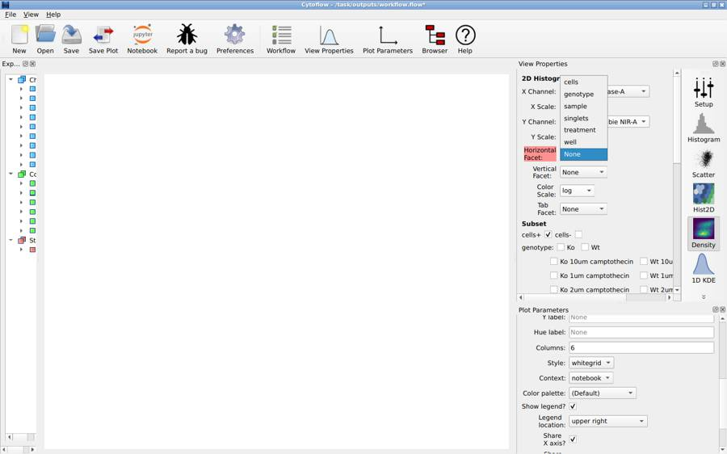
cu click 1130 281; sleep 15; cu screenshot /tmp/screen.png
{
"file_path": "/tmp/screen.png"
}/tmp/screen.png
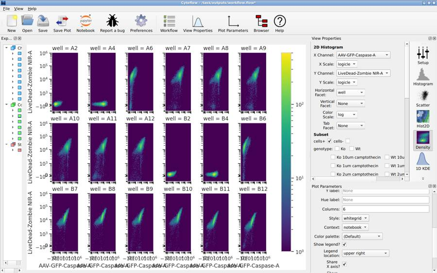
cu click 1393 250; sleep 3; cu click 1150 244; sleep 1; cu screenshot /tmp/s1.png
{
"file_path": "/tmp/s1.png"
}/tmp/s1.png
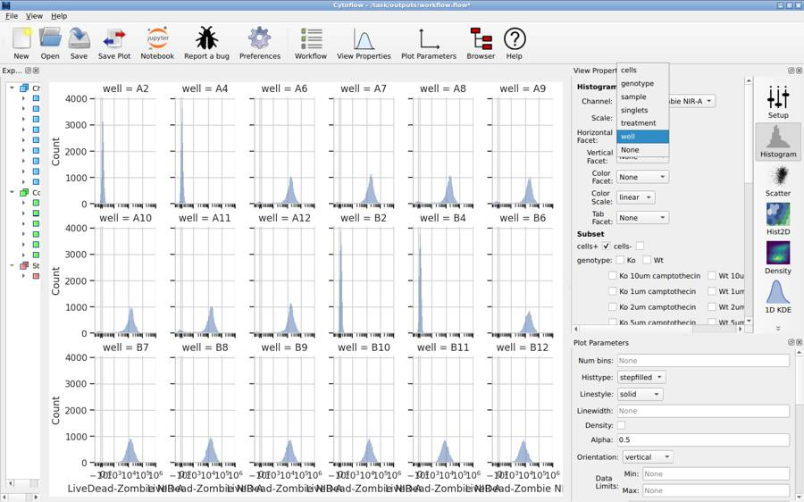
cu click 1128 268; sleep 2; cu click 1113 762; sleep 1; cu drag 1431 660 1431 760; sleep 1; cu screenshot /tmp/s1.png
{
"file_path": "/tmp/s1.png"
}/tmp/s1.png
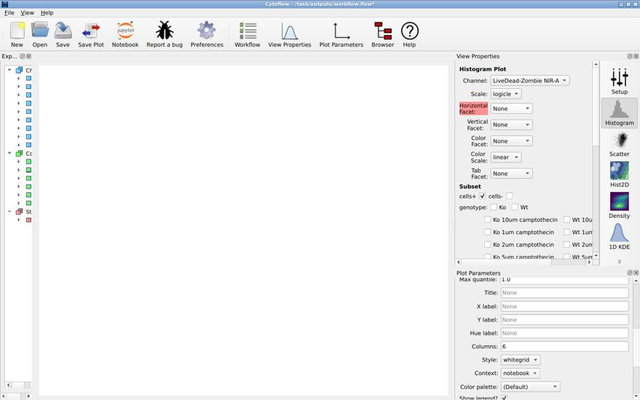
cu click 1270 779; cu key ctrl+a; cu key BackSpace; cu key Return; sleep 1; cu click 1150 280; sleep 1; cu click 1143 232; sleep 2; cu click 1150 317; sleep 1; cu click 1140 197; sleep 8; cu screenshot /tmp/screen.png
{
"file_path": "/tmp/screen.png"
}/tmp/screen.png
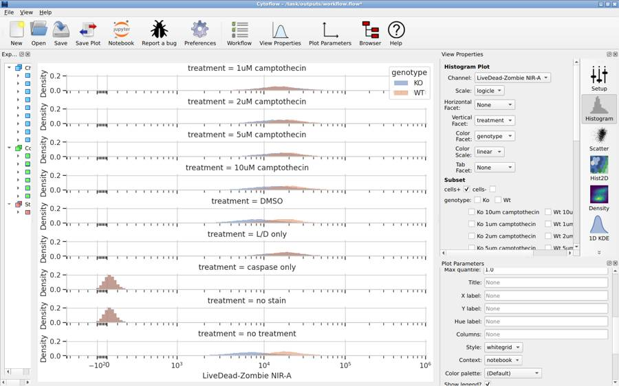
cu drag 1431 770 1431 880; sleep 1; cu screenshot /tmp/s1.png
{
"file_path": "/tmp/s1.png"
}/tmp/s1.png
cu click 1135 815; sleep 8; cu screenshot /tmp/screen.png
{
"file_path": "/tmp/screen.png"
}/tmp/screen.png
sleep 5; cu screenshot /tmp/screen.png
{
"file_path": "/tmp/screen.png"
}/tmp/screen.png

cu drag 1431 780 1431 600; sleep 1; cu click 1113 762; sleep 8; cu screenshot /tmp/screen.png
{
"file_path": "/tmp/screen.png"
}/tmp/screen.png
cu drag 1431 680 1431 500; sleep 1; cu screenshot /tmp/s1.png
{
"file_path": "/tmp/s1.png"
}/tmp/s1.png
cu click 1113 762; sleep 10; cu screenshot /tmp/screen.png
{
"file_path": "/tmp/screen.png"
}/tmp/screen.png
cu click 1190 181; sleep 1; cu click 1180 85; sleep 10; cu screenshot /tmp/screen.png; date
{
"file_path": "/tmp/screen.png"
}/tmp/screen.png Tue Nov 10 19:09:10 UTC 2026
cu click 557 75; sleep 2; cu click 1393 180; sleep 6; cu screenshot /tmp/screen.png
{
"file_path": "/tmp/screen.png"
}/tmp/screen.png
cu click 288 555; cu type "-100000"; cu key Return; sleep 1; cu click 288 585; cu type "1000"; cu key Return; sleep 8; cu screenshot /tmp/screen.png
{
"file_path": "/tmp/screen.png"
}/tmp/screen.png
cu click 45 180; sleep 3; cu screenshot /tmp/screen.png
{
"file_path": "/tmp/screen.png"
}/tmp/screen.png
cu click 294 581; cu type "caspase_pos"; cu key Return; sleep 1; cu click 275 612; sleep 1; cu click 250 613; sleep 1; cu click 1140 224; sleep 1; cu click 1135 273; sleep 1; cu click 1086 309; sleep 1; cu click 1080 359; sleep 1; cu drag 1341 250 1341 420; sleep 2; cu screenshot /tmp/screen.png
{
"file_path": "/tmp/screen.png"
}/tmp/screen.png
cu click 1106 252; sleep 1; cu drag 1341 400 1341 100; sleep 1; cu click 1152 258; sleep 1; cu screenshot /tmp/s1.png
{
"file_path": "/tmp/s1.png"
}/tmp/s1.png
cu click 1146 210; sleep 2; cu click 1148 676; sleep 1; cu screenshot /tmp/s1.png
{
"file_path": "/tmp/s1.png"
}/tmp/s1.png
cu click 1127 701; sleep 2; cu click 1113 762; sleep 8; cu screenshot /tmp/screen.png
{
"file_path": "/tmp/screen.png"
}/tmp/screen.png
cu click 294 642; cu type "1000"; cu key Return; sleep 6; cu screenshot /tmp/screen.png
{
"file_path": "/tmp/screen.png"
}/tmp/screen.png
thinking
All four gates are defined now, so I'm adding Cytoflow statistics for event counts per well and caspase medians to build the export tables.
cu click 45 700; sleep 3; cu screenshot /tmp/screen.png
{
"file_path": "/tmp/screen.png"
}/tmp/screen.png
cu click 408 784; sleep 1; cu drag 407 300 407 700; sleep 2; cu screenshot /tmp/screen.png
{
"file_path": "/tmp/screen.png"
}/tmp/screen.png
cu scroll 390 500 up 6; sleep 1; cu screenshot /tmp/screen.png
{
"file_path": "/tmp/screen.png"
}/tmp/screen.png
cu drag 421 510 560 510; sleep 2; cu click 289 249; cu type "n_all"; cu key Return; sleep 1; cu click 266 280; sleep 1; cu screenshot /tmp/s1.png
{
"file_path": "/tmp/s1.png"
}/tmp/s1.png
cu click 204 305; sleep 1; cu click 254 310; sleep 1; cu screenshot /tmp/s1.png
{
"file_path": "/tmp/s1.png"
}/tmp/s1.png
cu click 204 311; sleep 1; cu click 350 249; cu key ctrl+a; cu type "counts"; cu key Return; sleep 1; for p in "185 339" "185 367" "185 423" "362 367" "362 423"; do cu click $p; sleep 1; done; sleep 5; cu screenshot /tmp/screen.png
{
"file_path": "/tmp/screen.png"
}/tmp/screen.png
cu drag 1232 602 1232 885; sleep 2; cu screenshot /tmp/screen.png
{
"file_path": "/tmp/screen.png"
}/tmp/screen.png
cu click 1393 792; sleep 1; cu screenshot /tmp/screen.png
{
"file_path": "/tmp/screen.png"
}/tmp/screen.png
cu click 1399 605; sleep 3; cu screenshot /tmp/screen.png
{
"file_path": "/tmp/screen.png"
}/tmp/screen.png
cu click 1142 181; sleep 1; cu screenshot /tmp/s1.png
{
"file_path": "/tmp/s1.png"
}/tmp/s1.png
cu click 1124 206; sleep 4; cu screenshot /tmp/screen.png
{
"file_path": "/tmp/screen.png"
}/tmp/screen.png

sleep 5; tail -30 /tmp/cytoflow.log; ps -eo pid,rss,etime,cmd | grep cytoflow | grep -v grep | cut -c1-110; free -m | head -2; dmesg | tail -3
QXcbIntegration: Cannot create platform OpenGL context, neither GLX nor EGL are enabled
836 328 27:13 runuser -u cfapp -- env DISPLAY=:1 HOME=/home/cfapp XDG_RUNTIME_DIR=/tmp/runtime-cfapp
838 2424 27:13 /bin/bash /usr/local/bin/start-cytoflow
866 0 27:03 [cytoflow] <defunct>
1637 39432 16:15 /opt/cytoflow/cytoflow-1.3.2/cytoflow -B -S -I -c from multiprocessing.resource_tracke
1639 547076 16:15 /opt/cytoflow/cytoflow-1.3.2/cytoflow --multiprocessing-fork tracker_fd=10 pipe_handle
2798 522696 00:14 /opt/cytoflow/cytoflow-1.3.2/cytoflow
2812 39412 00:12 /opt/cytoflow/cytoflow-1.3.2/cytoflow -B -S -I -c from multiprocessing.resource_tracke
2814 314436 00:12 /opt/cytoflow/cytoflow-1.3.2/cytoflow --multiprocessing-fork tracker_fd=10 pipe_handle
2842 47684 00:09 /opt/cytoflow/cytoflow-1.3.2/_internal/PyQt5/Qt5/libexec/QtWebEngineProcess --type=zyg
2863 47872 00:09 /opt/cytoflow/cytoflow-1.3.2/_internal/PyQt5/Qt5/libexec/QtWebEngineProcess --type=zyg
2865 10944 00:09 /opt/cytoflow/cytoflow-1.3.2/_internal/PyQt5/Qt5/libexec/QtWebEngineProcess --type=zyg
2880 72220 00:09 /opt/cytoflow/cytoflow-1.3.2/_internal/PyQt5/Qt5/libexec/QtWebEngineProcess --type=zyg
total used free shared buff/cache available
Mem: 7949 1733 5239 15 1246 6216
[ 561.594489] [ 1531] 0 1531 784 28 27 1 0 49152 0 0 sleep
[ 561.594564] oom-kill:constraint=CONSTRAINT_NONE,nodemask=(null),cpuset=/,mems_allowed=0,global_oom,task_memcg=/,task=cytoflow,pid=868,uid=1002
[ 561.594719] Out of memory: Killed process 868 (cytoflow) total-vm:9121848kB, anon-rss:7303464kB, file-rss:8kB, shmem-rss:28kB, UID:1002 pgtables:14972kB oom_score_adj:0ps -o pid,ppid,cmd -p 1637,1639 | cut -c1-100; kill 1639 1637; sleep 1; cu screenshot /tmp/screen.png
{
"file_path": "/tmp/screen.png"
}PID PPID CMD 1637 1 /opt/cytoflow/cytoflow-1.3.2/cytoflow -B -S -I -c from multiprocessing.resource_tracker 1639 1 /opt/cytoflow/cytoflow-1.3.2/cytoflow --multiprocessing-fork tracker_fd=10 pipe_handle=1 /tmp/screen.png

thinking
Cytoflow crashed on the statistics table and auto-restarted, so I'm reloading the saved workflow and rebuilding the singlets, live and caspase gates, saving after each step.
cu click 600 9 double; sleep 2; cu key ctrl+o; sleep 2; cu paste "/task/outputs/workflow.flow"; sleep 0.5; cu key Return; sleep 3; cu click 828 427; sleep 2; cu click 408 713; sleep 1; cu click 240 181; sleep 2; cu click 294 239; cu type "30000"; cu key Return; sleep 1; cu click 294 383; sleep 20; cu screenshot /tmp/screen.png
{
"file_path": "/tmp/screen.png"
}/tmp/screen.png
cu click 240 445; sleep 4; cu click 45 460; sleep 3; cu drag 1232 803 1232 600; sleep 1; cu click 294 409; cu type "singlets"; cu key Return; sleep 1; cu click 277 439; sleep 1; cu click 215 463; sleep 1; cu click 277 469; sleep 1; cu click 215 518; sleep 1; cu click 1086 339; sleep 2; cu screenshot /tmp/screen.png
{
"file_path": "/tmp/screen.png"
}/tmp/screen.png
cu click 1098 642; sleep 3; cu click 1143 288; sleep 1; cu click 1127 313; sleep 3; cu click 1255 668 double; cu key ctrl+a; cu type "100"; cu key Return; cu click 1272 750; cu type "600000"; cu key Return; cu click 1272 810; cu type "300000"; cu key Return; sleep 8; cu screenshot /tmp/screen.png
{
"file_path": "/tmp/screen.png"
}/tmp/screen.png
for p in "555 815" "572 660" "600 575" "640 480" "700 400" "760 385" "750 450" "680 540" "632 640" "592 760" "580 815" "555 815"; do cu click $p; sleep 1.2; done; sleep 6; cu key ctrl+s; sleep 3; cu screenshot /tmp/screen.png; grep -c "" /task/outputs/workflow.flow; grep -n "name: singlets" -A 40 /task/outputs/workflow.flow | grep -E "^\S*[0-9]+-\s+- [0-9]" | head -30
{
"file_path": "/tmp/screen.png"
}/tmp/screen.png 1765 1351- - 53015.16578974351 1352- - 32640.344899254575 1354- - 81151.4228029474 1355- - 95666.02645565651 1357- - 128631.35651272896 1358- - 130351.30086924683 1360- - 197213.48298241344 1361- - 168843.49564530439 1363- - 297448.8985919522 1364- - 201413.8143019685 1366- - 399442.83026481635 1367- - 207335.69042136194 1369- - 381857.6696315639 1370- - 181110.23903547658 1372- - 264037.0933887726 1373- - 144733.00001634526 1375- - 183145.35447581147 1376- - 103702.85833197621 1378- - 116321.74406945222 1379- - 55058.87592267271 1381- - 95219.55130954934 1382- - 32640.344899254575
cu click 45 250; sleep 3; cu click 288 495; cu type "live"; cu key Return; sleep 1; cu click 265 525; sleep 1; cu click 259 621; sleep 1; cu click 1086 287; sleep 1; cu click 1130 202; sleep 1; cu click 1125 251; sleep 2; cu click 288 555; cu type "-100000"; cu key Return; sleep 1; cu click 288 585; cu type "1000"; cu key Return; sleep 6; cu click 45 180; sleep 3; cu click 294 581; cu type "caspase_pos"; cu key Return; sleep 1; cu click 275 612; sleep 1; cu click 250 613; sleep 1; cu click 1140 224; sleep 1; cu click 1135 273; sleep 1; cu click 1086 309; sleep 1; cu click 1080 359; sleep 1; cu click 294 642; cu type "1000"; cu key Return; sleep 6; cu key ctrl+s; sleep 3; cu screenshot /tmp/screen.png
{
"file_path": "/tmp/screen.png"
}/tmp/screen.png
grep -n -E "^\s+(name|low|high|threshold|channel|xchannel|ychannel|xscale|yscale|events): " /task/outputs/workflow.flow | grep -v "name: (genotype|sample|treatment|well|cells|singlets|live|caspase_pos)$" | head -40; cu click 408 784; sleep 1; cu click 45 700; sleep 3; cu drag 421 510 560 510; sleep 2; cu screenshot /tmp/screen.png
{
"file_path": "/tmp/screen.png"
}20: name: null 47: name: null 81: name: null 115: name: null 167: name: genotype 173: name: sample 195: name: treatment 208: name: well 229: xchannel: FSC-A 231: xscale: log 232: ychannel: SSC-A 234: yscale: log 361: events: 30000 572: name: genotype 578: name: sample 600: name: treatment 613: name: well 658: name: null 669: name: null 696: name: null 730: name: null 764: name: null 789: name: cells 818: xchannel: FSC-A 819: xscale: log 820: ychannel: SSC-A 821: yscale: log 851: name: genotype 857: name: sample 879: name: treatment 892: name: well 1121: name: genotype 1127: name: sample 1149: name: treatment 1162: name: well 1207: name: null 1218: name: null 1245: name: null 1271: name: null 1289: name: null /tmp/screen.png
cu click 350 668; cu type "counts"; cu key Return; sleep 1; cu click 266 698; sleep 1; cu screenshot /tmp/s1.png
{
"file_path": "/tmp/s1.png"
}/tmp/s1.png
cu click 204 720; sleep 1; cu click 254 728; sleep 1; cu screenshot /tmp/s1.png
{
"file_path": "/tmp/s1.png"
}/tmp/s1.png
cu click 204 576; sleep 1; for p in "185 757" "185 785" "185 842" "362 785" "362 842"; do cu click $p; sleep 1; done; sleep 4; cu key ctrl+s; sleep 3; cu screenshot /tmp/screen.png; grep -n -B3 -A25 "channel-statistic\|ChannelStat\|statistic" /task/outputs/workflow.flow | grep -v "^--$" | head -60
{
"file_path": "/tmp/screen.png"
}/tmp/screen.png
488- treatment: no treatment
489- well: B12
490- file: /task/inputs/raw/Caspase_WT_KO_optimization_caspase_Group_B12.fcs
491: statistics:
492- Conditions: !pandas-dataframe;1
493- columns: []
494- data: {}
495- index: !pandas-multiindex;2
496- codes:
497- - - 1
498- - 1
499- - 1
500- - 1
501- - 1
502- - 1
503- - 1
504- - 1
505- - 1
506- - 0
507- - 0
508- - 0
509- - 0
510- - 0
511- - 0
512- - 0
513- - 0
514- - 0
515- - - 16
516- - 15
1037- - B12
1038- values_type: categorical
1039- operation: *id002
1040: statistics:
1041- Conditions: !pandas-dataframe;1
1042- columns: []
1043- data: {}
1044- index: !pandas-multiindex;2
1045- codes:
1046- - - 1
1047- - 1
1048- - 1
1049- - 1
1050- - 1
1051- - 1
1052- - 1
1053- - 1
1054- - 1
1055- - 0
1056- - 0
1057- - 0
1058- - 0
1059- - 0
1060- - 0
1061- - 0
1062- - 0
1063- - 0
1064- - - 16
1065- - 15
1614- - B12
1615- values_type: categoricalcd /task/outputs; grep -n "^- !workflow-item\|^ statistics:\|^ [A-Za-z_]*: !pandas\|^ operation:\|!channel-stat\|^ views:\|^ current_view" workflow.flow | head -60; awk 'NR>=2440 && NR<=2475' workflow.flow | head -5; grep -n "counts" workflow.flow | head
1:- !workflow-item;5
13: genotype: !pandas-series;3
24: sample: !pandas-series;3
67: treatment: !pandas-series;3
92: well: !pandas-series;3
135: current_view: &id001 !density-view;2
354: operation: !import;4
491: statistics:
492: Conditions: !pandas-dataframe;1
638: views:
640:- !workflow-item;5
652: cells: !pandas-series;3
662: genotype: !pandas-series;3
673: sample: !pandas-series;3
716: treatment: !pandas-series;3
741: well: !pandas-series;3
784: current_view: &id003 !polygon-view;3
1039: operation: *id002
1040: statistics:
1041: Conditions: !pandas-dataframe;1
1187: views:
1189:- !workflow-item;5
1201: cells: !pandas-series;3
1211: genotype: !pandas-series;3
1222: sample: !pandas-series;3
1265: singlets: !pandas-series;3
1275: treatment: !pandas-series;3
1300: well: !pandas-series;3
1343: current_view: &id005 !polygon-view;3
1616: operation: *id004
1617: statistics:
1618: Conditions: !pandas-dataframe;1
1764: views:
1766:- !workflow-item;5
1778: cells: !pandas-series;3
1788: genotype: !pandas-series;3
1799: live: !pandas-series;3
1810: sample: !pandas-series;3
1853: singlets: !pandas-series;3
1863: treatment: !pandas-series;3
1888: well: !pandas-series;3
1931: current_view: &id007 !range-view;2
2181: operation: *id006
2182: statistics:
2183: Conditions: !pandas-dataframe;1
2329: views:
2331:- !workflow-item;5
2343: caspase_pos: !pandas-series;3
2353: cells: !pandas-series;3
2363: genotype: !pandas-series;3
2374: live: !pandas-series;3
2385: sample: !pandas-series;3
2428: singlets: !pandas-series;3
2438: treatment: !pandas-series;3
2463: well: !pandas-series;3
2506: current_view: &id010 !threshold-view;2
2765: operation: *id009
2766: statistics:
2767: Conditions: !pandas-dataframe;1
2913: views:
- 10uM camptothecin
- 1uM camptothecin
- 2uM camptothecin
- 5uM camptothecin
- DMSO
3247: name: counts
3479: counts: !pandas-dataframe;1cu click 1393 588; sleep 1; cu screenshot /tmp/s1.png
{
"file_path": "/tmp/s1.png"
}/tmp/s1.png
cu click 1405 325; sleep 3; cu screenshot /tmp/screen.png
{
"file_path": "/tmp/screen.png"
}/tmp/screen.png
cu click 1160 181; sleep 1; cu screenshot /tmp/s1.png
{
"file_path": "/tmp/s1.png"
}/tmp/s1.png
cu click 1143 206; sleep 4; cu screenshot /tmp/screen.png
{
"file_path": "/tmp/screen.png"
}/tmp/screen.png
cu click 1154 211; sleep 1; cu screenshot /tmp/s1.png
{
"file_path": "/tmp/s1.png"
}/tmp/s1.png
cu click 1140 212; sleep 2; cu click 1168 241; sleep 1; cu screenshot /tmp/s1.png
{
"file_path": "/tmp/s1.png"
}/tmp/s1.png
cu click 1135 217; sleep 2; cu click 1168 271; sleep 1; cu click 1146 224; sleep 2; cu click 1168 301; sleep 1; cu click 1133 230; sleep 2; cu click 1168 331; sleep 1; cu click 1160 212; sleep 2; cu click 1086 440; sleep 4; cu screenshot /tmp/screen.png
{
"file_path": "/tmp/screen.png"
}/tmp/screen.png
cu click 1217 362; cu key ctrl+a; cu type "0"; cu key Return; sleep 3; cu click 1217 392; sleep 2; cu screenshot /tmp/screen.png
{
"file_path": "/tmp/screen.png"
}/tmp/screen.png
mkdir -p /task/outputs/exports && chmod 2777 /task/outputs/exports; cu paste "/task/outputs/exports/sub_cellspos.csv"; sleep 0.5; cu key Return; sleep 3; cu screenshot /tmp/screen.png; cat /task/outputs/exports/sub_cellspos.csv
/tmp/screen.png 0.0,0.0,live = False,0.0,live = True,0.0 0.0,0.0,caspase_pos = False,caspase_pos = False,caspase_pos = True,caspase_pos = True well = A10,singlets = False,19.0,3541.0,30.0,224.0 0.0,singlets = True,344.0,12250.0,402.0,1093.0 well = A11,singlets = False,53.0,2669.0,172.0,150.0 0.0,singlets = True,702.0,13278.0,1218.0,669.0 well = A12,singlets = False,66.0,4363.0,221.0,218.0 0.0,singlets = True,530.0,13221.0,577.0,800.0 well = A6,singlets = False,2639.0,291.0,258.0,0.0 0.0,singlets = True,13222.0,248.0,1517.0,1.0 well = A7,singlets = False,10.0,2832.0,48.0,154.0 0.0,singlets = True,429.0,14368.0,465.0,752.0 well = A8,singlets = False,4.0,2642.0,30.0,164.0 0.0,singlets = True,307.0,14172.0,394.0,1284.0 well = A9,singlets = False,9.0,2737.0,32.0,232.0 0.0,singlets = True,367.0,12994.0,485.0,1404.0 well = B10,singlets = False,41.0,2476.0,23.0,15.0 0.0,singlets = True,1092.0,13098.0,320.0,301.0 well = B11,singlets = False,64.0,2552.0,42.0,4.0 0.0,singlets = True,1647.0,11900.0,408.0,159.0 well = B12,singlets = False,100.0,2653.0,79.0,27.0 0.0,singlets = True,1487.0,12077.0,642.0,280.0 well = B6,singlets = False,1985.0,187.0,77.0,0.0 0.0,singlets = True,13090.0,312.0,801.0,1.0 well = B7,singlets = False,40.0,2873.0,12.0,11.0 0.0,singlets = True,1100.0,12889.0,196.0,248.0 well = B8,singlets = False,33.0,2432.0,10.0,5.0 0.0,singlets = True,1302.0,13842.0,153.0,210.0 well = B9,singlets = False,46.0,1894.0,24.0,12.0 0.0,singlets = True,1220.0,12525.0,379.0,325.0 well = B2,singlets = False,0.0,0.0,1658.0,422.0 0.0,singlets = True,3.0,3.0,15838.0,958.0 well = A2,singlets = False,0.0,0.0,3247.0,264.0 0.0,singlets = True,0.0,0.0,14320.0,245.0 well = A4,singlets = False,0.0,0.0,145.0,3264.0 0.0,singlets = True,0.0,0.0,1634.0,13090.0 well = B4,singlets = False,0.0,0.0,81.0,2923.0 0.0,singlets = True,0.0,1.0,1934.0,13774.0
cu click 300 440; sleep 5; cu screenshot /tmp/screen.png
{
"file_path": "/tmp/screen.png"
}/tmp/screen.png
cu drag 1341 250 1341 560; sleep 2; cu screenshot /tmp/s1.png
{
"file_path": "/tmp/s1.png"
}/tmp/s1.png
for p in "1106 165" "1114 190" "1114 218" "1114 246" "1114 274" "1114 302" "1272 190" "1272 274"; do cu click $p; sleep 1.5; done; sleep 5; cu screenshot /tmp/screen.png
{
"file_path": "/tmp/screen.png"
}/tmp/screen.png
cu click 300 648; sleep 5; cu drag 1341 250 1341 420; sleep 2; cu screenshot /tmp/s1.png
{
"file_path": "/tmp/s1.png"
}/tmp/s1.png
cu click 1152 258; sleep 1; cu click 1145 115; sleep 2; cu drag 1341 250 1341 440; sleep 2; cu screenshot /tmp/s1.png
{
"file_path": "/tmp/s1.png"
}/tmp/s1.png
for p in "1106 217" "1114 242" "1114 270" "1114 298" "1114 326" "1114 354" "1272 326"; do cu click $p; sleep 1.5; done; sleep 5; cu screenshot /tmp/screen.png
{
"file_path": "/tmp/screen.png"
}/tmp/screen.png
nohup bash -c 'while true; do echo "$(date +%T) $(ps -eo rss,cmd | grep "multiprocessing-fork" | grep -v grep | awk "{s+=\$1} END {print s/1024}") $(free -m | awk "/Mem/ {print \$7}")"; sleep 2; done' > /tmp/mem.log 2>&1 &
cu key ctrl+s; sleep 2; cu click 300 181; sleep 6; cu screenshot /tmp/screen.png{
"file_path": "/tmp/screen.png"
}/tmp/screen.png
cu click 1393 180; sleep 3; cu click 360 239; cu key ctrl+a; cu key BackSpace; cu key Return; sleep 2; cu screenshot /tmp/screen.png
{
"file_path": "/tmp/screen.png"
}/tmp/screen.png
cu click 363 383; sleep 60; tail -15 /tmp/mem.log; cu screenshot /tmp/screen.png
{
"file_path": "/tmp/screen.png"
}19:24:58 1386.54 5532 19:25:00 1386.54 5546 19:25:02 1386.54 5558 19:25:04 1386.54 5578 19:25:06 1386.54 5586 19:25:08 1386.54 5602 19:25:10 1386.54 5612 19:25:12 1386.54 5616 19:25:14 1386.54 5625 19:25:16 1386.54 5631 19:25:18 1386.54 5633 19:25:20 1386.54 5634 19:25:22 1386.54 5640 19:25:24 1386.54 5640 19:25:26 1386.54 5640 /tmp/screen.png
cu key ctrl+s; sleep 4; cu click 300 790; sleep 6; tail -2 /tmp/mem.log; cu screenshot /tmp/screen.png; grep -n "events:" /task/outputs/workflow.flow | head -3
{
"file_path": "/tmp/screen.png"
}19:25:40 1386.54 5622 19:25:42 1386.54 5622 /tmp/screen.png 361: events: null
cu click 1217 156; sleep 2; cu paste "/task/outputs/exports/full_cellspos_v1.csv"; sleep 0.5; cu key Return; sleep 3; cat /task/outputs/exports/full_cellspos_v1.csv
0.0,0.0,live = False,0.0,live = True,0.0 0.0,0.0,caspase_pos = False,caspase_pos = False,caspase_pos = True,caspase_pos = True well = A10,singlets = False,299.0,65161.0,659.0,4069.0 0.0,singlets = True,6958.0,223026.0,7270.0,19659.0 well = A11,singlets = False,660.0,33460.0,2134.0,2084.0 0.0,singlets = True,9105.0,167540.0,15601.0,8259.0 well = A12,singlets = False,922.0,59700.0,3125.0,2912.0 0.0,singlets = True,7977.0,179498.0,8759.0,11102.0 well = A6,singlets = False,35813.0,4223.0,3355.0,8.0 0.0,singlets = True,182059.0,3431.0,21062.0,65.0 well = A7,singlets = False,164.0,38007.0,622.0,1708.0 0.0,singlets = True,5364.0,190732.0,5918.0,10202.0 well = A8,singlets = False,108.0,33918.0,377.0,2220.0 0.0,singlets = True,3839.0,182123.0,5094.0,15574.0 well = A9,singlets = False,156.0,40535.0,520.0,3169.0 0.0,singlets = True,5183.0,185043.0,6696.0,19777.0 well = B10,singlets = False,654.0,43152.0,408.0,284.0 0.0,singlets = True,20014.0,233755.0,5562.0,5265.0 well = B11,singlets = False,1624.0,48188.0,672.0,128.0 0.0,singlets = True,31133.0,222398.0,7908.0,3610.0 well = B12,singlets = False,1603.0,47188.0,1466.0,366.0 0.0,singlets = True,27974.0,214867.0,11568.0,5194.0 well = B2,singlets = False,3.0,10.0,21536.0,5710.0 0.0,singlets = True,30.0,40.0,206791.0,12004.0 well = B6,singlets = False,30349.0,2855.0,1118.0,5.0 0.0,singlets = True,200992.0,5003.0,12373.0,34.0 well = B7,singlets = False,698.0,59398.0,219.0,168.0 0.0,singlets = True,22851.0,263143.0,3655.0,5280.0 well = B8,singlets = False,432.0,40743.0,104.0,66.0 0.0,singlets = True,20244.0,228272.0,2322.0,3264.0 well = B9,singlets = False,653.0,25796.0,350.0,168.0 0.0,singlets = True,18103.0,177303.0,5159.0,4663.0 well = A2,singlets = False,0.0,0.0,40558.0,3198.0 0.0,singlets = True,1.0,1.0,174335.0,2690.0 well = A4,singlets = False,0.0,2.0,2368.0,46477.0 0.0,singlets = True,0.0,1.0,23745.0,194183.0 well = B4,singlets = False,0.0,2.0,1426.0,58912.0 0.0,singlets = True,0.0,9.0,38185.0,280706.0
cu click 300 181; sleep 4; cu drag 1341 300 1341 100; sleep 1; cu click 1190 181; sleep 1; cu screenshot /tmp/s1.png
{
"file_path": "/tmp/s1.png"
}/tmp/s1.png
cu click 1127 373; sleep 12; cu drag 1431 660 1431 760; sleep 1; cu screenshot /tmp/s1.png; tail -1 /tmp/mem.log
{
"file_path": "/tmp/s1.png"
}/tmp/s1.png 19:26:46 1452.11 5587
cu click 1270 779; cu type "6"; cu key Return; sleep 8; cu click 1150 244; sleep 1; cu screenshot /tmp/s1.png
{
"file_path": "/tmp/s1.png"
}/tmp/s1.png
cu click 1125 221; sleep 2; cu click 557 75; sleep 25; cu screenshot /tmp/screen.png; tail -1 /tmp/mem.log
{
"file_path": "/tmp/screen.png"
}/tmp/screen.png 19:27:34 1445.27 5561
cu click 1393 390; sleep 15; cu drag 1431 660 1431 760; sleep 1; cu screenshot /tmp/s1.png; tail -1 /tmp/mem.log
{
"file_path": "/tmp/s1.png"
}/tmp/s1.png 19:28:13 1361.48 5598
cu click 1270 724; cu type "6"; cu key Return; sleep 12; cu click 1155 304; sleep 1; cu click 1130 281; sleep 30; cu screenshot /tmp/screen.png; tail -1 /tmp/mem.log
{
"file_path": "/tmp/screen.png"
}/tmp/screen.png 19:29:05 1563.18 5324
cu click 557 75; sleep 2; cu click 300 705; sleep 12; cu screenshot /tmp/screen.png; tail -1 /tmp/mem.log
{
"file_path": "/tmp/screen.png"
}/tmp/screen.png 19:29:27 1482.58 5455
cu drag 1431 720 1431 540; sleep 1; cu click 1148 676; sleep 1; cu click 1127 701; sleep 3; cu click 1113 762; sleep 3; cu click 1152 258; sleep 1; cu screenshot /tmp/s1.png
{
"file_path": "/tmp/s1.png"
}/tmp/s1.png
cu click 1146 354; sleep 3; cu click 1158 334; sleep 10; cu screenshot /tmp/screen.png
{
"file_path": "/tmp/screen.png"
}/tmp/screen.png
cu key ctrl+s; sleep 3; cu click 300 705; sleep 5; cu click 45 250; sleep 4; cu screenshot /tmp/screen.png
{
"file_path": "/tmp/screen.png"
}/tmp/screen.png
cu click 350 754; cu type "time_first_20s"; cu key Return; sleep 1; cu click 265 785; sleep 1; cu screenshot /tmp/s1.png
{
"file_path": "/tmp/s1.png"
}/tmp/s1.png
cu click 200 887; sleep 10; cu click 350 815; cu type "0"; cu key Return; sleep 1; cu click 350 845; cu type "20000"; cu key Return; sleep 12; cu screenshot /tmp/screen.png; tail -1 /tmp/mem.log
{
"file_path": "/tmp/screen.png"
}/tmp/screen.png 19:31:19 1464.37 5379
cu click 45 700; sleep 4; cu scroll 330 500 down 15; sleep 1; cu screenshot /tmp/screen.png
{
"file_path": "/tmp/screen.png"
}/tmp/screen.png
cu click 350 466; cu type "counts_time"; cu key Return; sleep 1; cu click 254 526; sleep 1; cu screenshot /tmp/s1.png
{
"file_path": "/tmp/s1.png"
}/tmp/s1.png
cu click 204 527; sleep 1; cu click 362 583; sleep 1; cu click 362 640; sleep 6; cu key ctrl+s; sleep 3; cu screenshot /tmp/screen.png
{
"file_path": "/tmp/screen.png"
}/tmp/screen.png
sleep 5; cu click 1393 588; sleep 1; cu click 1405 325; sleep 3; cu click 1160 181; sleep 1; cu screenshot /tmp/s1.png
{
"file_path": "/tmp/s1.png"
}/tmp/s1.png
cu click 1160 230; sleep 3; cu click 1154 211; sleep 1; cu screenshot /tmp/s1.png
{
"file_path": "/tmp/s1.png"
}/tmp/s1.png
cu click 1140 212; sleep 2; cu click 1168 241; sleep 1; cu screenshot /tmp/s1.png
{
"file_path": "/tmp/s1.png"
}/tmp/s1.png
cu click 1135 218; sleep 2; cu click 1168 301; sleep 1; cu click 1165 253; sleep 3; cu click 1217 362; cu key ctrl+a; cu type "0"; cu key Return; sleep 2; cu screenshot /tmp/screen.png
{
"file_path": "/tmp/screen.png"
}/tmp/screen.png
cu click 1217 392; sleep 2; cu paste "/task/outputs/exports/full_time_gate.csv"; sleep 0.5; cu key Return; sleep 3; cat /task/outputs/exports/full_time_gate.csv; cu key ctrl+s
0.0,time_first_20s = False,time_first_20s = True well = A10,299136.0,253454.0 well = A11,213468.0,163752.0 well = A12,406250.0,2824.0 well = A2,204122.0,161614.0 well = A4,251780.0,189040.0 well = A6,229495.0,183229.0 well = A7,222287.0,173227.0 well = A8,208718.0,176274.0 well = A9,238094.0,190160.0 well = B10,300331.0,238775.0 well = B11,308751.0,252420.0 well = B12,297550.0,240673.0 well = B2,224782.0,168013.0 well = B4,339325.0,266345.0 well = B6,259593.0,197872.0 well = B7,339901.0,272273.0 well = B8,267004.0,226431.0 well = B9,234576.0,191196.0
sleep 2; cu click 1393 180; sleep 3; cu click 1190 181; sleep 1; cu screenshot /tmp/s1.png
{
"file_path": "/tmp/s1.png"
}/tmp/s1.png
cu click 1130 301; sleep 15; cu screenshot /tmp/screen.png; tail -1 /tmp/mem.log
{
"file_path": "/tmp/screen.png"
}/tmp/screen.png 19:35:01 1496.5 5397
cu click 45 700; sleep 4; cu scroll 330 500 down 25; sleep 1; cu screenshot /tmp/screen.png
{
"file_path": "/tmp/screen.png"
}/tmp/screen.png
cu click 187 525; sleep 1; cu click 161 547; sleep 1; cu scroll 330 500 up 6; sleep 1; cu screenshot /tmp/screen.png
{
"file_path": "/tmp/screen.png"
}/tmp/screen.png
cu click 166 463; sleep 1; cu click 350 214; cu type "caspase_median_live"; cu key Return; sleep 1; cu click 266 244; sleep 1; cu screenshot /tmp/s1.png
{
"file_path": "/tmp/s1.png"
}/tmp/s1.png
cu click 248 245; sleep 1; cu click 254 274; sleep 1; cu screenshot /tmp/s1.png
{
"file_path": "/tmp/s1.png"
}/tmp/s1.png
cu click 208 538; sleep 1; cu click 362 388; sleep 8; cu key ctrl+s; sleep 3; cu screenshot /tmp/screen.png
{
"file_path": "/tmp/screen.png"
}/tmp/screen.png
cu click 1393 588; sleep 1; cu click 1405 325; sleep 3; cu click 1160 181; sleep 1; cu screenshot /tmp/s1.png
{
"file_path": "/tmp/s1.png"
}/tmp/s1.png
cu click 1187 206; sleep 3; cu click 1154 211; sleep 1; cu screenshot /tmp/s1.png
{
"file_path": "/tmp/s1.png"
}/tmp/s1.png
cu click 1183 212; sleep 2; cu click 1145 241; sleep 1; cu screenshot /tmp/s1.png
{
"file_path": "/tmp/s1.png"
}/tmp/s1.png
cu click 1135 218; sleep 4; cu click 1217 392; sleep 2; cu paste "/task/outputs/exports/full_caspase_median_live.csv"; sleep 0.5; cu key Return; sleep 3; cat /task/outputs/exports/full_caspase_median_live.csv; cu screenshot /tmp/screen.png
{
"file_path": "/tmp/screen.png"
}well = A10,2217.0 well = A11,560.0 well = A12,1432.0 well = A2,137.0 well = A4,5899.0 well = A6,89.0 well = A7,1624.5 well = A8,2218.5 well = A9,2221.0 well = B10,896.0 well = B11,337.5 well = B12,353.0 well = B2,265.0 well = B4,2976.0 well = B6,81.0 well = B7,1834.0 well = B8,1719.0 well = B9,777.0 /tmp/screen.png
cu key ctrl+s; sleep 4; cu click 20 29; sleep 1; cu screenshot /tmp/s1.png
{
"file_path": "/tmp/s1.png"
}/tmp/s1.png
cd /task/outputs; cp workflow.flow /tmp/workflow_backup.flow; grep -n -E "^\s+events:|^ (low|high|threshold|channel): |!(polygon|range|threshold|channel-stat)[^-]|^ name: (cells|singlets|live|caspase_pos|time_first_20s|counts|counts_time|caspase_median_live)$|^ (name|function|statistic_name|by): |^ operation: !" workflow.flow | head -60; cu click 46 195; sleep 25; ps -eo pid,ppid,rss,etime,cmd | grep cytoflow | grep -v grep | cut -c1-110
354: operation: !import;4 361: events: null 641: channel: Time 888: op: &id002 !polygon;1 889: name: cells 1447: op: &id004 !polygon;1 1448: name: singlets 1516: name: cells 2034: op: &id007 !range;1 2038: name: live 2067: name: cells 2102: name: singlets 2618: op: &id009 !threshold;1 2620: name: caspase_pos 2650: name: cells 2664: name: live 2693: name: singlets 3223: name: caspase_pos 3230: name: cells 3237: name: live 3244: name: singlets 3419: operation: !channel-statistic;2 3426: channel: FSC-A 3428: name: counts 3431: name: caspase_pos 3438: name: cells 3451: name: live 3480: name: singlets 5578: op: &id013 !range;1 5582: name: time_first_20s 5611: name: caspase_pos 5616: name: cells 5627: name: live 5654: name: singlets 7903: channel: SSC-A 7936: name: caspase_pos 7941: name: cells 7952: name: live 7979: name: singlets 7984: name: time_first_20s 8046: operation: !channel-statistic;2 8050: channel: Time 8052: name: counts_time 8055: name: caspase_pos 8060: name: cells 8071: name: live 8098: name: singlets 8103: name: time_first_20s 10170: name: time_first_20s 10569: operation: !channel-statistic;2 10572: channel: AAV-GFP-Caspase-A 10574: name: caspase_median_live 10577: name: caspase_pos 10582: name: cells 10593: name: live 10620: name: singlets 10625: name: time_first_20s 836 835 328 52:52 runuser -u cfapp -- env DISPLAY=:1 HOME=/home/cfapp XDG_RUNTIME_DIR=/tmp/runtime 838 836 2416 52:52 /bin/bash /usr/local/bin/start-cytoflow 866 1 0 52:43 [cytoflow] <defunct> 1637 1 0 41:54 [cytoflow] <defunct> 1639 1 0 41:54 [cytoflow] <defunct> 2812 1 0 25:52 [cytoflow] <defunct> 9065 838 522024 00:22 /opt/cytoflow/cytoflow-1.3.2/cytoflow 9086 9065 39332 00:20 /opt/cytoflow/cytoflow-1.3.2/cytoflow -B -S -I -c from multiprocessing.resource_ 9088 9065 314428 00:20 /opt/cytoflow/cytoflow-1.3.2/cytoflow --multiprocessing-fork tracker_fd=10 pipe_ 9134 9065 47724 00:16 /opt/cytoflow/cytoflow-1.3.2/_internal/PyQt5/Qt5/libexec/QtWebEngineProcess --ty 9155 9065 47772 00:16 /opt/cytoflow/cytoflow-1.3.2/_internal/PyQt5/Qt5/libexec/QtWebEngineProcess --ty 9157 9155 10944 00:16 /opt/cytoflow/cytoflow-1.3.2/_internal/PyQt5/Qt5/libexec/QtWebEngineProcess --ty 9172 9157 71856 00:16 /opt/cytoflow/cytoflow-1.3.2/_internal/PyQt5/Qt5/libexec/QtWebEngineProcess --ty
cd /task/outputs; sed -n '2034,2042p;2618,2623p;5578,5586p' workflow.flow; cu click 600 9 double; sleep 2; cu key ctrl+o; sleep 2; cu paste "/task/outputs/workflow.flow"; sleep 0.5; cu key Return; sleep 3; cu screenshot /tmp/screen.png
{
"file_path": "/tmp/screen.png"
} op: &id007 !range;1
channel: LiveDead-Zombie NIR-A
high: 1000.0
low: -100000.0
name: live
plot_params: !histogram-params;4
alpha: 0.5
col_wrap: null
density: false
op: &id009 !threshold;1
channel: AAV-GFP-Caspase-A
name: caspase_pos
threshold: 1000.0
plot_params: !histogram-params;4
alpha: 0.5
op: &id013 !range;1
channel: Time
high: 20000.0
low: 0.0
name: time_first_20s
plot_params: !histogram-params;4
alpha: 0.5
col_wrap: null
density: false
/tmp/screen.pngcu click 738 427; sleep 75; tail -4 /tmp/mem.log; cu screenshot /tmp/screen.png
{
"file_path": "/tmp/screen.png"
}19:41:22 1613.08 5395 19:41:24 1613.08 5394 19:41:26 1613.08 5394 19:41:28 1613.08 5395 /tmp/screen.png
cu click 408 713; sleep 1; cu click 408 614; sleep 1; cu click 240 614; sleep 6; cu screenshot /tmp/screen.png
{
"file_path": "/tmp/screen.png"
}/tmp/screen.png
cu click 1217 392; sleep 2; cu paste "/task/outputs/exports/full_cellspos_reload.csv"; sleep 0.5; cu key Return; sleep 3; cd /task/outputs/exports; diff full_cellspos_v1.csv full_cellspos_reload.csv && echo IDENTICAL; cu click 1086 462; sleep 2; cu click 1146 462; sleep 4; cu click 1217 392; sleep 2; cu paste "/task/outputs/exports/full_cellsneg.csv"; sleep 0.5; cu key Return; sleep 3; head -8 full_cellsneg.csv; wc -l full_cellsneg.csv; cu click 1146 462; sleep 2; cu click 1086 462; sleep 3; cu screenshot /tmp/screen.png
{
"file_path": "/tmp/screen.png"
}IDENTICAL 0.0,0.0,live = False,0.0,live = True,0.0 0.0,0.0,caspase_pos = False,caspase_pos = False,caspase_pos = True,caspase_pos = True well = A10,singlets = False,56784.0,54795.0,44332.0,22889.0 0.0,singlets = True,4120.0,14309.0,9172.0,19088.0 well = A11,singlets = False,57135.0,24506.0,28508.0,6009.0 0.0,singlets = True,3852.0,9787.0,4192.0,4388.0 well = A12,singlets = False,39925.0,31260.0,24816.0,13672.0 0.0,singlets = True,3310.0,9363.0,4587.0,8146.0 38 full_cellsneg.csv /tmp/screen.png
{
"skill": "dataviz"
}Launching skill: dataviz
cu key ctrl+s; sleep 3; rm -f /task/outputs/exports/sub_cellspos.csv; mkdir -p /tmp/work; cat > /tmp/work/tab.py <<'E'
import csv, sys, pandas as pd, numpy as np
ex='/task/outputs/exports/'
lay=pd.read_csv('/task/inputs/plate_layout.csv')
def parse(fn):
rows=list(csv.reader(open(fn)))
out={}; well=None
for r in rows[2:]:
if r[0].startswith('well'): well=r[0].split('= ')[1]
s = r[1].split('= ')[1]=='True'
v=[int(float(x)) for x in r[2:6]]
# column order verified against controls: (L0,C0),(L0,C1),(L1,C0),(L1,C1)
out[(well,s)]=dict(zip([(0,0),(0,1),(1,0),(1,1)],v))
return out
pos=parse(ex+'full_cellspos_v1.csv'); neg=parse(ex+'full_cellsneg.csv')
tg={}
for r in list(csv.reader(open(ex+'full_time_gate.csv')))[1:]:
tg[r[0].split('= ')[1]]=(int(float(r[1])),int(float(r[2])))
med={r[0].split('= ')[1]:float(r[1]) for r in csv.reader(open(ex+'full_caspase_median_live.csv'))}
recs=[]
for _,l in lay.iterrows():
w=l.well
cells=sum(sum(pos[(w,s)].values()) for s in (False,True))
ncells=sum(sum(neg[(w,s)].values()) for s in (False,True))
tot=cells+ncells
assert tot==sum(tg[w]), (w,tot,tg[w])
sing=sum(pos[(w,True)].values())
live=pos[(w,True)][(1,0)]+pos[(w,True)][(1,1)]
cp=pos[(w,True)][(1,1)]
dead_cp=pos[(w,True)][(0,1)]; dead=pos[(w,True)][(0,0)]+dead_cp
recs.append(dict(file=l.file,well=w,sample=l['sample'],genotype=l.genotype,treatment=l.treatment,all_events=tot,cells=cells,singlets=sing,live=live,caspase_pos=cp,time_first_20s=tg[w][1],dead=dead,dead_cp=dead_cp,sing_cp=cp+dead_cp,median_casp_live=med[w]))
d=pd.DataFrame(recs)
d['pct_cells']=100*d.cells/d.all_events; d['pct_sing']=100*d.singlets/d.cells; d['pct_live']=100*d.live/d.singlets; d['pct_cp']=100*d.caspase_pos/d.live
d['pct_t20']=100*d.time_first_20s/d.all_events; d['pct_cp_dead']=100*d.dead_cp/d.dead; d['pct_cp_sing']=100*d.sing_cp/d.singlets
d.to_csv('/tmp/work/perwell.csv',index=False)
pd.set_option('display.width',250)
print(d[['well','sample','all_events','cells','singlets','live','caspase_pos','pct_cells','pct_sing','pct_live','pct_cp','pct_t20','pct_cp_dead','pct_cp_sing','median_casp_live']].round(2).to_string())
E
python3 /tmp/work/tab.pywell sample all_events cells singlets live caspase_pos pct_cells pct_sing pct_live pct_cp pct_t20 pct_cp_dead pct_cp_sing median_casp_live 0 A2 WT no stain 365736 220783 177027 177025 2690 60.37 80.18 100.00 1.52 44.19 50.00 1.52 137.0 1 A4 WT caspase only 440820 266776 217929 217928 194183 60.52 81.69 100.00 89.10 42.88 100.00 89.10 5899.0 2 A6 WT L/D only 412724 250016 206617 21127 65 60.58 82.64 10.23 0.31 44.40 1.85 1.69 89.0 3 A7 WT 10uM camptothecin 395514 252717 212216 16120 10202 63.90 83.97 7.60 63.29 43.80 97.26 94.68 1624.5 4 A8 WT 5uM camptothecin 384992 243253 206630 20668 15574 63.18 84.94 10.00 75.35 45.79 97.94 95.68 2218.5 5 A9 WT 2uM camptothecin 428254 261079 216699 26473 19777 60.96 83.00 12.22 74.71 44.40 97.28 94.52 2221.0 6 A10 WT 1uM camptothecin 552590 327101 256913 26929 19659 59.19 78.54 10.48 73.00 45.87 96.97 94.46 2217.0 7 A11 WT DMSO 377220 238843 200505 23860 8259 63.32 83.95 11.90 34.61 43.41 94.85 87.68 560.0 8 A12 WT no treatment 409074 273995 207336 19861 11102 66.98 75.67 9.58 55.90 0.69 95.75 91.93 1432.0 9 B2 KO no stain 392795 246124 218865 218795 12004 62.66 88.92 99.97 5.49 42.77 57.14 5.50 265.0 10 B4 KO caspase only 605670 379240 318900 318891 280706 62.61 84.09 100.00 88.03 43.98 100.00 88.03 2976.0 11 B6 KO L/D only 457465 252729 218402 12407 34 55.25 86.42 5.68 0.27 43.25 2.43 2.31 81.0 12 B7 KO 10uM camptothecin 612174 355412 294929 8935 5280 58.06 82.98 3.03 59.09 44.48 92.01 91.01 1834.0 13 B8 KO 5uM camptothecin 493435 295447 254102 5586 3264 59.88 86.01 2.20 58.43 45.89 91.85 91.12 1719.0 14 B9 KO 2uM camptothecin 425772 232195 205228 9822 4663 54.54 88.39 4.79 47.48 44.91 90.74 88.67 777.0 15 B10 KO 1uM camptothecin 539106 309094 264596 10827 5265 57.33 85.60 4.09 48.63 44.29 92.11 90.33 896.0 16 B11 KO DMSO 561171 315661 265049 11518 3610 56.25 83.97 4.35 31.34 44.98 87.72 85.27 337.5 17 B12 KO no treatment 538223 310226 259603 16762 5194 57.64 83.68 6.46 30.99 44.72 88.48 84.77 353.0
thinking
Per-well numbers are tabulated and checked against the FCS event counts; I'm checking the palette reference, then writing the figure and the CSV, JSON and report files.
cd /tmp/claude-0/bundled-skills/2.1.322/430a39dcf5ab09c1ac5a8dca38d475aa/dataviz; grep -n -i -E "#[0-9a-f]{6}" references/palette.md | head -40; grep -n -i -E "matplotlib|static|png" references/*.md | head -1218: --surface-1: #fcfcfb; /* chart surface */ 19: --text-primary: #0b0b0b; 20: --text-secondary: #52514e; 21: --series-1: #2a78d6; /* categorical slot 1 */ 27: --surface-1: #1a1a19; 28: --text-primary: #f0efec; 29: --text-secondary: #c3c2b7; 30: --series-1: #3987e5; 35: --surface-1: #1a1a19; 36: --text-primary: #f0efec; 37: --text-secondary: #c3c2b7; 38: --series-1: #3987e5; 54:| 1 | blue | `#2a78d6` | `#3987e5` | 55:| 2 | orange | `#eb6834` | `#d95926` | 56:| 3 | aqua | `#1baf7a` | `#199e70` | 57:| 4 | yellow | `#eda100` | `#c98500` | 58:| 5 | magenta | `#e87ba4` | `#d55181` | 59:| 6 | green | `#008300` | `#008300` | 60:| 7 | violet | `#6250d6` | `#9085e9` | 61:| 8 | red | `#e34948` | `#e66767` | 86:pure re-order. Light slot 7 has since been lightened, `#4a3aa7` -> `#6250d6` 108:| 100 | `#cde2fb` | 250 | `#86b6ef` | 400 | `#3987e5` | 550 | `#1c5cab` | 109:| 150 | `#b7d3f6` | 300 | `#6da7ec` | 450 | `#2a78d6` | 600 | `#184f95` | 110:| 200 | `#9ec5f4` | 350 | `#5598e7` | 500 | `#256abf` | 650 | `#104281` | 111:| | | | | | | 700 | `#0d366b` | 117:must still clear 2:1: on light, start no lighter than **step 250** (`#86b6ef`, 118:2.06:1); on dark, go no darker than **step 600** (`#184f95`, 2.15:1). 123:(light `#f0efec`, dark `#383835`). Equal step count per arm. (blue<->aqua was 130:| good | `#0ca30c` | 3.27 | 5.19 | 131:| warning | `#fab219` | 1.79 | 9.49 | 132:| serious | `#ec835a` | 2.57 | 6.60 | 133:| critical | `#d03b3b` | 4.68 | 3.62 | 135:Dark: same four steps - all clear 3:1 on the dark surface (`#1a1a19`) and remain 145:green `#006300` sits 10.1 from the series green; green vs status-good (9.7) 160:- Light chart surface: `#fcfcfb` 161:- Dark chart surface: `#1a1a19` 173:| Chart surface | `#fcfcfb` | `#1a1a19` | 174:| Page plane | `#f9f9f7` | `#0d0d0d` | 175:| Primary ink | `#0b0b0b` | `#f0efec` | 176:| Secondary ink | `#52514e` | `#c3c2b7` | references/interaction.md:5:Design it with the same care as the static render. Shell cwd was reset to /task
cd /tmp/claude-0/bundled-skills/2.1.322/430a39dcf5ab09c1ac5a8dca38d475aa/dataviz; (node scripts/validate_palette.js "#2a78d6,#eb6834" --mode light 2>&1 || echo "node unavailable") | tail -15
export const contrast = (a, b) => { const [hi, lo] = [relLum(a), relLum(b)].sort((x, y) => y - x); return (hi + 0.05) / (lo + 0.05); };
^^^^^^
SyntaxError: Unexpected token 'export'
at internalCompileFunction (node:internal/vm:73:18)
at wrapSafe (node:internal/modules/cjs/loader:1274:20)
at Module._compile (node:internal/modules/cjs/loader:1320:27)
at Module._extensions..js (node:internal/modules/cjs/loader:1414:10)
at Module.load (node:internal/modules/cjs/loader:1197:32)
at Module._load (node:internal/modules/cjs/loader:1013:12)
at Function.executeUserEntryPoint [as runMain] (node:internal/modules/run_main:128:12)
at node:internal/main/run_main_module:28:49
Node.js v18.19.1
node unavailable
Shell cwd was reset to /taskmkdir -p /tmp/vp && cp /tmp/claude-0/bundled-skills/2.1.322/430a39dcf5ab09c1ac5a8dca38d475aa/dataviz/scripts/validate_palette.js /tmp/vp/v.mjs && node /tmp/vp/v.mjs "#2a78d6,#eb6834" --mode light 2>&1 | tail -15
(Bash completed with no output)
cat > /tmp/work/deliver.py <<'E'
import pandas as pd, numpy as np, json
d=pd.read_csv('/tmp/work/perwell.csv')
O='/task/outputs/'
# ---------- counts.csv
pops=[('all_events','other','none',None),('cells','cells','all_events','all_events'),('singlets','singlets','cells','cells'),
('live','live','singlets','singlets'),('caspase_pos','marker_positive','live','live'),('time_first_20s','other','all_events','all_events')]
rows=[]
for _,r in d.iterrows():
for p,role,parent,pc in pops:
rows.append(dict(file=r.file,well=r.well,population=p,role=role,parent=parent,count=int(r[p]),
pct_of_parent='' if pc is None else round(100*r[p]/r[pc],4)))
pd.DataFrame(rows).to_csv(O+'counts.csv',index=False)
# ---------- flags.csv
fl=[]
for _,r in d.iterrows():
base=(f"{int(r.all_events)} events; {r.pct_t20:.1f}% of events in first 20 s of ~47 s run (steady flow); "
f"{int(r.live)} live singlets")
if r.well=='A12':
fl.append(dict(file=r.file,well=r.well,issue_type='clog',
evidence=(f"Only {int(r.time_first_20s)} of {int(r.all_events)} events ({r.pct_t20:.2f}%) were acquired in the first 20 s "
"of the ~47 s run, versus 42.8-45.9% in the other 17 wells; flow then resumed as a burst at about 2-3x the normal event rate. "
f"Readout is also out of line: {r.pct_cp:.1f}% caspase_pos of live vs 34.6% in WT DMSO (A11) and 31.0% in KO no treatment (B12)."),
decision='exclude'))
else:
fl.append(dict(file=r.file,well=r.well,issue_type='none',evidence=base,decision='keep'))
pd.DataFrame(fl).to_csv(O+'flags.csv',index=False)
# ---------- condition_summary.csv
used=d[d.well!='A12'].copy()
M1='100 * caspase_pos / live'
cs=[]
def add(name,wells,vals,mdef,norm='none'):
vals=np.array(vals,float)
cs.append(dict(condition=name,wells=';'.join(wells),n_wells_used=len(wells),mean=round(vals.mean(),3),
sd='' if len(vals)<2 else round(vals.std(ddof=1),3),metric_definition=mdef,normalisation_applied=norm))
tmap={'DMSO':'DMSO','no treatment':'no_treatment','1uM camptothecin':'CPT_1uM','2uM camptothecin':'CPT_2uM','5uM camptothecin':'CPT_5uM','10uM camptothecin':'CPT_10uM'}
for g in ['WT','KO']:
for t,n in tmap.items():
s=used[(used.genotype==g)&(used.treatment==t)]
if len(s): add(f'{g}_{n}',list(s.well),s.pct_cp,M1)
cpt=lambda g: used[(used.genotype==g)&used.treatment.str.contains('camptothecin')].sort_values('well',key=lambda x:x.str[1:].astype(int))
for g in ['WT','KO']:
s=cpt(g); add(f'{g}_CPT_1-10uM_pooled',list(s.well),s.pct_cp,M1+' (each camptothecin dose well treated as one observation)')
s=used[(used.genotype=='KO')&used.treatment.isin(['DMSO','no treatment'])]
add('KO_baseline_DMSO_and_no_treatment_pooled',list(s.well),s.pct_cp,M1)
for g,dw in [('WT','A11'),('KO','B11')]:
s=cpt(g); ref=float(used[used.well==dw].pct_cp.iloc[0])
add(f'{g}_CPT_1-10uM_pooled_fold_over_DMSO',list(s.well),s.pct_cp/ref,M1,
f'(100 * caspase_pos / live in each camptothecin well) / (100 * caspase_pos / live in {dw}, the {g} DMSO well)')
M2='100 * live / singlets'
for g in ['WT','KO']:
s=used[(used.genotype==g)&~used.treatment.isin(['no stain','caspase only'])]
add(f'{g}_viability_all_Zombie_stained_wells',list(s.well),s.pct_live,M2)
M3='median AAV-GFP-Caspase-A (BL1-A, CellEvent Caspase-3/7) fluorescence of live'
for g in ['WT','KO']:
s=cpt(g); add(f'{g}_CPT_1-10uM_pooled_median_caspase',list(s.well),s.median_casp_live,M3)
s=used[(used.genotype==g)&(used.treatment=='DMSO')]; add(f'{g}_DMSO_median_caspase',list(s.well),s.median_casp_live,M3)
c=pd.DataFrame(cs); c.to_csv(O+'condition_summary.csv',index=False)
pd.set_option('display.width',250); pd.set_option('display.max_colwidth',60)
print(c.drop(columns=['normalisation_applied']).to_string())
E
python3 /tmp/work/deliver.py; head -8 /task/outputs/counts.csv; wc -l /task/outputs/*.csvcondition wells n_wells_used mean sd metric_definition 0 WT_DMSO A11 1 34.614 100 * caspase_pos / live 1 WT_CPT_1uM A10 1 73.003 100 * caspase_pos / live 2 WT_CPT_2uM A9 1 74.706 100 * caspase_pos / live 3 WT_CPT_5uM A8 1 75.353 100 * caspase_pos / live 4 WT_CPT_10uM A7 1 63.288 100 * caspase_pos / live 5 KO_DMSO B11 1 31.342 100 * caspase_pos / live 6 KO_no_treatment B12 1 30.987 100 * caspase_pos / live 7 KO_CPT_1uM B10 1 48.628 100 * caspase_pos / live 8 KO_CPT_2uM B9 1 47.475 100 * caspase_pos / live 9 KO_CPT_5uM B8 1 58.432 100 * caspase_pos / live 10 KO_CPT_10uM B7 1 59.093 100 * caspase_pos / live 11 WT_CPT_1-10uM_pooled A7;A8;A9;A10 4 71.588 5.621 100 * caspase_pos / live (each camptothecin dose well treated as one observation) 12 KO_CPT_1-10uM_pooled B7;B8;B9;B10 4 53.407 6.208 100 * caspase_pos / live (each camptothecin dose well treated as one observation) 13 KO_baseline_DMSO_and_no_treatment_pooled B11;B12 2 31.165 0.251 100 * caspase_pos / live 14 WT_CPT_1-10uM_pooled_fold_over_DMSO A7;A8;A9;A10 4 2.068 0.162 100 * caspase_pos / live 15 KO_CPT_1-10uM_pooled_fold_over_DMSO B7;B8;B9;B10 4 1.704 0.198 100 * caspase_pos / live 16 WT_viability_all_Zombie_stained_wells A6;A7;A8;A9;A10;A11 6 10.404 1.65 100 * live / singlets 17 KO_viability_all_Zombie_stained_wells B6;B7;B8;B9;B10;B11;B12 7 4.370 1.463 100 * live / singlets 18 WT_CPT_1-10uM_pooled_median_caspase A7;A8;A9;A10 4 2070.250 297.171 median AAV-GFP-Caspase-A (BL1-A, CellEvent Caspase-3/7) fluorescence of live 19 WT_DMSO_median_caspase A11 1 560.000 median AAV-GFP-Caspase-A (BL1-A, CellEvent Caspase-3/7) fluorescence of live 20 KO_CPT_1-10uM_pooled_median_caspase B7;B8;B9;B10 4 1306.500 546.898 median AAV-GFP-Caspase-A (BL1-A, CellEvent Caspase-3/7) fluorescence of live 21 KO_DMSO_median_caspase B11 1 337.500 median AAV-GFP-Caspase-A (BL1-A, CellEvent Caspase-3/7) fluorescence of live file,well,population,role,parent,count,pct_of_parent Caspase_WT_KO_optimization_caspase_Group_A2.fcs,A2,all_events,other,none,365736, Caspase_WT_KO_optimization_caspase_Group_A2.fcs,A2,cells,cells,all_events,220783,60.3668 Caspase_WT_KO_optimization_caspase_Group_A2.fcs,A2,singlets,singlets,cells,177027,80.1814 Caspase_WT_KO_optimization_caspase_Group_A2.fcs,A2,live,live,singlets,177025,99.9989 Caspase_WT_KO_optimization_caspase_Group_A2.fcs,A2,caspase_pos,marker_positive,live,2690,1.5196 Caspase_WT_KO_optimization_caspase_Group_A2.fcs,A2,time_first_20s,other,all_events,161614,44.1887 Caspase_WT_KO_optimization_caspase_Group_A4.fcs,A4,all_events,other,none,440820, 23 /task/outputs/condition_summary.csv 109 /task/outputs/counts.csv 19 /task/outputs/flags.csv 151 total
sed -i 's/round(100\*r\[p\]\/r\[pc\],4)/round(100*r[p]\/r[pc],6)/' /tmp/work/deliver.py && python3 /tmp/work/deliver.py >/dev/null
cat > /tmp/work/fig.py <<'E'
import pandas as pd, numpy as np, matplotlib
matplotlib.use('Agg'); import matplotlib.pyplot as plt
d=pd.read_csv('/tmp/work/perwell.csv')
SURF='#fcfcfb'; INK='#0b0b0b'; INK2='#52514e'; GRID='#e6e5e0'
COL={'WT':'#2a78d6','KO':'#eb6834'}; MK={'WT':'o','KO':'s'}
order=['no treatment','DMSO','1uM camptothecin','2uM camptothecin','5uM camptothecin','10uM camptothecin']
xl=['no\ntreatment','DMSO\nvehicle','1 µM','2 µM','5 µM','10 µM']
plt.rcParams.update({'font.family':'DejaVu Sans','font.size':10,'text.color':INK,'axes.labelcolor':INK2,'xtick.color':INK2,'ytick.color':INK2})
fig,axs=plt.subplots(1,2,figsize=(12,5.4),gridspec_kw={'width_ratios':[1.25,1]},facecolor=SURF)
def style(ax):
ax.set_facecolor(SURF)
for s in ['top','right']: ax.spines[s].set_visible(False)
for s in ['left','bottom']: ax.spines[s].set_color(GRID)
ax.grid(axis='y',color=GRID,lw=0.8); ax.set_axisbelow(True); ax.tick_params(length=0)
ax.set_xticks(range(6)); ax.set_xticklabels(xl)
ax.axvline(1.5,color=GRID,lw=0.8,ls=(0,(3,3)))
def series(ax,col,g):
s=d[d.genotype==g].set_index('treatment').reindex(order)
y=s[col].values; ok=(s.well!='A12').values
xs=np.arange(6)
ax.plot(xs[2:],y[2:],color=COL[g],lw=2,zorder=2) # dose series
ax.plot(xs[ok],y[ok],ls='',marker=MK[g],ms=9,mfc=COL[g],mec=SURF,mew=2,zorder=3,label=g if g=='WT' else 'PGRN-KO')
if (~ok).any():
ax.plot(xs[~ok],y[~ok],ls='',marker=MK[g],ms=9,mfc=SURF,mec=COL[g],mew=2,zorder=3)
return xs,y,ok
ax=axs[0]; style(ax)
for g in ['WT','KO']:
xs,y,ok=series(ax,'pct_cp',g)
for i in [1,5]:
ax.annotate(f'{y[i]:.0f}%',(xs[i],y[i]),xytext=(0,10 if g=='WT' else -17),textcoords='offset points',ha='center',color=INK,fontsize=9)
if g=='KO': ax.annotate(f'{y[0]:.0f}%',(xs[0],y[0]),xytext=(0,-17),textcoords='offset points',ha='center',color=INK,fontsize=9)
a12=d[d.well=='A12'].pct_cp.iloc[0]
ax.annotate('A12 excluded\n(clog during\nacquisition)',(0,a12),xytext=(0.22,a12+9),color=INK2,fontsize=8.5,va='bottom',
arrowprops=dict(arrowstyle='-',color=INK2,lw=0.8))
ax.text(5.12,d[d.well=='A7'].pct_cp.iloc[0],'WT',va='center',color=INK,fontweight='bold')
ax.text(5.12,d[d.well=='B7'].pct_cp.iloc[0],'KO',va='center',color=INK,fontweight='bold')
ax.set_ylim(0,100); ax.set_xlim(-0.5,5.6)
ax.set_ylabel('caspase-3/7+ cells (% of live singlets)')
ax.set_xlabel('camptothecin, 4.5 h',x=0.68)
ax.set_title('Caspase-3/7 activity in viable neurons: camptothecin raises it in both\ngenotypes; KO is not higher than WT',loc='left',fontsize=11,fontweight='bold')
ax.legend(frameon=False,loc='lower right',ncol=2,handletextpad=0.3)
ax=axs[1]; style(ax)
for g in ['WT','KO']:
xs,y,ok=series(ax,'pct_live',g)
ax.text(5.12,d[d.well=='A7'].pct_live.iloc[0],'WT',va='center',color=INK,fontweight='bold')
ax.text(5.12,d[d.well=='B7'].pct_live.iloc[0],'KO',va='center',color=INK,fontweight='bold')
ax.set_ylim(0,20); ax.set_xlim(-0.5,5.6)
ax.set_ylabel('viable cells (Zombie NIR-negative, % of singlets)')
ax.set_xlabel('camptothecin, 4.5 h',x=0.68)
ax.set_title('Assay limitation: only 2–12% of singlets\nare viable at acquisition',loc='left',fontsize=11,fontweight='bold')
fig.text(0.01,0.012,'One well per condition (n = 1), plate acquired 09-Mar-2023. Gates: cells → singlets → live (Zombie NIR < 1000) → caspase_pos (CellEvent BL1-A > 1000). '
'Hollow marker = excluded well.',color=INK2,fontsize=8.5)
fig.tight_layout(rect=(0,0.04,1,1)); fig.savefig('/task/outputs/figure.png',dpi=160,facecolor=SURF)
E
python3 /tmp/work/fig.py{
"file_path": "/task/outputs/figure.png"
}(Bash completed with no output)
cd /task/inputs; python3 -I - <<'E'
import glob
for f in sorted(glob.glob('raw/*.fcs'), key=lambda x:(x.split('_')[-1][0],int(x.split('_')[-1][1:-4]))):
b=open(f,'rb').read(60000); ts=int(b[10:18]);te=int(b[18:26]); t=b[ts:te+1].decode('latin1'); p=t[1:].split(t[0]); kv=dict(zip(p[::2],p[1::2]))
print(f.split('_')[-1], kv['$TOT'], kv.get('#CoincidentCount'), round(100*int(kv.get('#CoincidentCount',0))/int(kv['$TOT']),1), kv.get('#FLOWRATE'), kv['$VOL'], kv.get('$P4V'), kv.get('$P5V'))
E
cu screenshot /tmp/screen.png >/dev/null; python3 -c "
from PIL import Image; im=Image.open('/tmp/screen.png').crop((400,0,1000,20)); im.save('/tmp/title.png')" 2>/dev/null || echo nopilA2.fcs 365736 32822 9.0 200 157000 250 300 A4.fcs 440820 41140 9.3 200 158000 250 300 A6.fcs 412724 38046 9.2 200 154000 250 300 A7.fcs 395514 31260 7.9 200 157000 250 300 A8.fcs 384992 28906 7.5 200 157000 250 300 A9.fcs 428254 39310 9.2 200 158000 250 300 A10.fcs 552590 69063 12.5 200 158000 250 300 A11.fcs 377220 28444 7.5 200 157000 250 300 A12.fcs 409074 57692 14.1 200 157000 250 300 B2.fcs 392795 26007 6.6 200 157000 250 300 B4.fcs 605670 61934 10.2 200 157000 250 300 B6.fcs 457465 36300 7.9 200 157000 250 300 B7.fcs 612174 65284 10.7 200 158000 250 300 B8.fcs 493435 41719 8.5 200 155000 250 300 B9.fcs 425772 28737 6.7 200 157000 250 300 B10.fcs 539106 47200 8.8 200 157000 250 300 B11.fcs 561171 55299 9.9 200 155000 250 300 B12.fcs 538223 51104 9.5 200 158000 250 300
{
"file_path": "/tmp/title.png"
}
cd /task/outputs; python3 - <<'E'
import re
t=open('workflow.flow').read().split('\n')
def verts(name):
for i,l in enumerate(t):
if l.strip()==f'name: {name}' and 'polygon' in t[i-1]:
v=[]; j=i+2
while 'python/tuple' in t[j]:
v.append((round(float(t[j+1].split('- ')[1])),round(float(t[j+2].split('- ')[1])))); j+=3
return v
print('cells',verts('cells')); print('singlets',verts('singlets'))
E
ls -la /task/outputs /task/outputs/exportscells [(67933, 77000), (77131, 209533), (140990, 591130), (354010, 895066), (898340, 895066), (927316, 383422), (456366, 161312), (191630, 62013), (94308, 52248)] singlets [(53015, 32640), (81151, 95666), (128631, 130351), (197213, 168843), (297449, 201414), (399443, 207336), (381858, 181110), (264037, 144733), (183145, 103703), (116322, 55059), (95220, 32640)] /task/outputs: total 428 drwxrwsrwx 3 agent task 4096 Nov 10 19:44 . drwxr-xr-x 4 root root 4096 Nov 5 22:25 .. -rw-r--r-- 1 root task 2179 Nov 10 19:44 condition_summary.csv -rw-r--r-- 1 root task 9988 Nov 10 19:44 counts.csv drwxrwsrwx 2 root task 4096 Nov 10 19:43 exports -rw-r--r-- 1 root task 163251 Nov 10 19:44 figure.png -rw-r--r-- 1 root task 3045 Nov 10 19:44 flags.csv -rw-rw-r-- 1 cfapp task 239156 Nov 10 19:43 workflow.flow /task/outputs/exports: total 28 drwxrwsrwx 2 root task 4096 Nov 10 19:43 . drwxrwsrwx 3 agent task 4096 Nov 10 19:44 .. -rw-rw-r-- 1 cfapp task 301 Nov 10 19:36 full_caspase_median_live.csv -rw-rw-r-- 1 cfapp task 2010 Nov 10 19:42 full_cellsneg.csv -rw-rw-r-- 1 cfapp task 1978 Nov 10 19:41 full_cellspos_reload.csv -rw-rw-r-- 1 cfapp task 1978 Nov 10 19:25 full_cellspos_v1.csv -rw-rw-r-- 1 cfapp task 557 Nov 10 19:33 full_time_gate.csv
cat > /tmp/work/report.py <<'E'
import pandas as pd, json
d=pd.read_csv('/tmp/work/perwell.csv')
O='/task/outputs/'
Q=("Is a difference in caspase-3/7 activity present in PGRN-KO iPSC-derived neurons compared with WT (PGP1) neurons, "
"with or without camptothecin, and is the CellEvent Caspase-3/7 flow assay ready to be used for this comparison?")
tab="| Well | Sample | All events | cells | singlets | live | caspase_pos | live % of singlets | caspase_pos % of live | Median caspase (live) | Used |\n|---|---|---|---|---|---|---|---|---|---|---|\n"
for _,r in d.iterrows():
tab+=f"| {r.well} | {r['sample']} | {int(r.all_events):,} | {int(r.cells):,} | {int(r.singlets):,} | {int(r.live):,} | {int(r.caspase_pos):,} | {r.pct_live:.1f} | {r.pct_cp:.1f} | {r.median_casp_live:.0f} | {'**excluded**' if r.well=='A12' else 'yes'} |\n"
rep=f"""# Caspase-3/7 assay in WT vs PGRN-KO iPSC-derived neurons (plate acquired 09-Mar-2023)
## Question
{Q}
Short answer: **no**. Camptothecin raised caspase-3/7 activity in both genotypes, so the assay detects induced apoptosis, but KO neurons did not show more caspase activity than WT. At baseline the two genotypes were the same (31% vs 35% of viable cells), and with camptothecin KO was lower than WT (53% vs 72%). The plate cannot settle the question: there is one well per condition and only 2–12% of cells were viable when acquired.
## Methods
- **Software.** All gating and statistics were done in Cytoflow 1.3.2 on all events (8,392,735 events, 18 files; "Events per sample" unset). Tables were exported from Cytoflow's Table view (`exports/`) and only tabulated and plotted in Python.
- **Channels.** BL1-A is labelled `AAV-GFP-Caspase-A` in the files. That label is out of date: no AAV-GFP was used in this run, and the channel carries the CellEvent Caspase-3/7 Green signal. RL3-A (`LiveDead-Zombie NIR-A`) is Zombie NIR.
- **Gates** (Cytoflow gates are flags on every event; counts are nested by requiring all parent gates):
1. `cells`: polygon on FSC-A vs SSC-A (log axes) around the main cell cloud, excluding low-scatter debris and events at the top of the scale. Vertices (FSC-A, SSC-A): (67933, 77000), (77131, 209533), (140990, 591130), (354010, 895066), (898340, 895066), (927316, 383422), (456366, 161312), (191630, 62013), (94308, 52248).
2. `singlets`: polygon on FSC-A vs FSC-H along the diagonal, within `cells`. Vertices (FSC-A, FSC-H): (53015, 32640), (81151, 95666), (128631, 130351), (197213, 168843), (297449, 201414), (399443, 207336), (381858, 181110), (264037, 144733), (183145, 103703), (116322, 55059), (95220, 32640).
3. `live`: range gate, Zombie NIR-A from -100000 to 1000, within `singlets`. The boundary sits in the valley between the Zombie-negative peak (same position as the unstained wells) and the Zombie-bright peak (about 1.5 × 10^4).
4. `caspase_pos`: threshold gate, CellEvent (BL1-A) > 1000, within `live`. This is the valley between the two caspase peaks in KO wells; it gives 0.31% (A6) and 0.27% (B6) positives in the L/D-only controls, which are the correct background control for this gate.
5. `time_first_20s`: range gate, Time 0–20000 (ms), on all events. Used only for acquisition QC.
- **Colour correction.** None applied. The single-stain controls show no spillover: caspase-only wells put 1 of 217,929 (A4) and 9 of 318,900 (B4) singlets above the Zombie boundary, and L/D-only wells have no more BL1 signal than unstained wells (1.7% vs 1.5% of WT singlets above 1000; 2.3% vs 5.5% for KO).
- **Primary readout.** 100 × `caspase_pos` / `live` per well. Secondary: median CellEvent fluorescence of `live` (no threshold involved) and viability, 100 × `live` / `singlets`.
- **Reproducibility check.** The saved `workflow.flow` was reopened in a fresh Cytoflow session and re-run on all events; the re-exported counts table was identical to the first export. Gate totals per file equal the event count in each FCS header.
## Results
**Per-well counts**
{tab}
**Controls behave as labelled.** Unstained wells are Zombie-negative and CellEvent-low; caspase-only wells are Zombie-negative with 88–89% CellEvent-positive cells; L/D-only wells are 90–94% Zombie-positive with 0.3% CellEvent-positive live cells.
**Acquisition QC.** Seventeen wells flowed steadily (42.8–45.9% of events in the first 20 s of a ~47 s run). **A12 (WT no treatment) clogged**: 2,824 of 409,074 events (0.69%) arrived in the first 20 s, followed by a burst at roughly 2–3× the normal event rate. Its readout is also out of line with the other baseline wells (55.9% vs 31–35%). A12 is excluded, which leaves WT DMSO (A11) as the only WT baseline.
**Camptothecin induces caspase-3/7 in both genotypes** (% `caspase_pos` of `live`):
| Treatment | WT | KO |
|---|---|---|
| No treatment | excluded (A12) | 31.0 |
| DMSO | 34.6 | 31.3 |
| 1 µM camptothecin | 73.0 | 48.6 |
| 2 µM camptothecin | 74.7 | 47.5 |
| 5 µM camptothecin | 75.4 | 58.4 |
| 10 µM camptothecin | 63.3 | 59.1 |
| Camptothecin, four doses pooled (mean ± SD) | 71.6 ± 5.6 | 53.4 ± 6.2 |
| Fold over same-genotype DMSO (mean ± SD) | 2.07 ± 0.16 | 1.70 ± 0.20 |
- WT is already at its plateau at the lowest dose (1 µM); KO rises between 2 and 5 µM.
- The threshold-free readout agrees: median CellEvent fluorescence of live cells is 560 (WT) vs 338 (KO) with DMSO, and 2070 ± 297 (WT) vs 1307 ± 547 (KO) with camptothecin.
**Genotype comparison.** At baseline KO and WT are indistinguishable (31.3% vs 34.6%, one well each). With camptothecin KO is about 18 percentage points *lower* than WT. Neither result supports higher caspase activity in KO.
**Viability is very low in every stained well, and lower in KO.** Only 10.4 ± 1.7% of WT singlets and 4.4 ± 1.5% of KO singlets are Zombie-negative, including untreated and DMSO wells. The Zombie-positive cells are almost all CellEvent-positive (95–98% in WT, 88–92% in KO), so 85–96% of all singlets are caspase-positive regardless of treatment. The primary readout therefore describes a sma
… [8,572 more characters not shown]ok (22, 7) (18, 5) (108, 7) file,well,issue_type,evidence,decision Caspase_WT_KO_optimization_caspase_Group_A2.fcs,A2,none,365736 events; 44.2% of events in first 20 s of ~47 s run (steady flow); 177025 live singlets,keep Caspase_WT_KO_optimization_caspase_Group_A4.fcs,A4,none,440820 events; 42.9% of events in first 20 s of ~47 s run (steady flow); 217928 live singlets,keep 94 condition,wells,n_wells_used,mean,sd,metric_definition,normalisation_applied WT_DMSO,A11,1,34.614,,100 * caspase_pos / live,none WT_CPT_1uM,A10,1,73.003,,100 * caspase_pos / live,none WT_CPT_2uM,A9,1,74.706,,100 * caspase_pos / live,none
pkill -f "multiprocessing-fork.*mem.log" 2>/dev/null; pkill -f "sleep 2; done" 2>/dev/null; kill %1 2>/dev/null; ps -ef | grep "mem.log\|while true" | grep -v grep | awk '{print $2}' | xargs -r kill 2>/dev/null
cat > /root/.claude/projects/-task/memory/cytoflow-gui-pitfalls.md <<'E'
---
name: cytoflow-gui-pitfalls
description: Cytoflow 1.3.2 GUI (driven via `cu`) pitfalls on the 8 GB task box — OOM, crashing view, table export quirks
metadata:
type: reference
---
Observed on 2026-11-10 driving Cytoflow 1.3.2 through `cu` on the /task box (8 GB RAM, ~8.4 M events).
- Drawing a polygon gate with all events loaded got the worker OOM-killed (7.3 GB). Set "Events per sample" to ~30000 while drawing gates, then clear it and re-import for final counts (full import + all gates + statistics used ~1.6 GB).
- Selecting the **Long Table** view crashed the whole app (the launcher restarts it; unsaved ops are lost). Use the **Table** view instead; save with Ctrl+S before trying new views.
- Table view takes at most 4 facets (rows, subrows, columns, subcolumns); use the Subset checkboxes for a fifth grouping level. In the exported CSV the sub-column header row is mislabelled (False, False, True, True); real column order is as on screen: (col=F, sub=F), (F, T), (T, F), (T, T). Confirm with a control well.
- After a crash, orphaned `cytoflow --multiprocessing-fork` workers keep RAM; kill them before reloading.
- Reopening a saved .flow: answer "No" to run, then set events and click Import to control memory; answering "Yes" on the final all-events workflow worked.
E
echo "- [Cytoflow GUI pitfalls](cytoflow-gui-pitfalls.md) — OOM when gating on all events, Long Table view crash, Table export header quirk" >> /root/.claude/projects/-task/memory/MEMORY.md
ls -la /task/outputs; cu screenshot /tmp/screen.png >/dev/nullExit code 144
ls -la /task/outputs /root/.claude/projects/-task/memory/ 2>&1; cat /root/.claude/projects/-task/memory/MEMORY.md 2>&1 | tail -3
/root/.claude/projects/-task/memory/: total 8 drwxr-xr-x 2 root root 4096 Nov 10 18:47 . drwxr-xr-x 3 root root 4096 Nov 10 18:47 .. /task/outputs: total 448 drwxrwsrwx 3 agent task 4096 Nov 10 19:45 . drwxr-xr-x 4 root root 4096 Nov 5 22:25 .. -rw-r--r-- 1 root task 4487 Nov 10 19:45 answer.json -rw-r--r-- 1 root task 2179 Nov 10 19:44 condition_summary.csv -rw-r--r-- 1 root task 9988 Nov 10 19:44 counts.csv drwxrwsrwx 2 root task 4096 Nov 10 19:43 exports -rw-r--r-- 1 root task 163251 Nov 10 19:44 figure.png -rw-r--r-- 1 root task 3045 Nov 10 19:44 flags.csv -rw-r--r-- 1 root task 11302 Nov 10 19:45 report.md -rw-rw-r-- 1 cfapp task 239156 Nov 10 19:43 workflow.flow cat: /root/.claude/projects/-task/memory/MEMORY.md: No such file or directory
{
"file_path": "/root/.claude/projects/-task/memory/cytoflow-gui-pitfalls.md",
"content": "---\nname: cytoflow-gui-pitfalls\ndescription: Cytoflow 1.3.2 GUI (driven via `cu`) pitfalls on the 8 GB task box \u2014 OOM, crashing view, table export quirks\nmetadata:\n type: reference\n---\n\nObserved on 2026-11-10 driving Cytoflow 1.3.2 through `cu` on the /task box (8 GB RAM, ~8.4 M events).\n\n- Drawing a polygon gate with all events loaded got the worker OOM-killed (7.3 GB). Set \"Events per sample\" to ~30000 while drawing gates, then clear it and re-import for final counts (full import + all gates + statistics used ~1.6 GB).\n- Selecting the **Long Table** view crashed the whole app (the launcher restarts it; unsaved ops are lost). Use the **Table** view instead; save with Ctrl+S before trying new views.\n- Table view takes at most 4 facets (rows, subrows, columns, subcolumns); use the Subset checkboxes for a fifth grouping level. In the exported CSV the sub-column header row is mislabelled (False, False, True, True); real column order is as on screen: (col=F, sub=F), (F, T), (T, F), (T, T). Confirm with a control well.\n- After a crash, orphaned `cytoflow --multiprocessing-fork` workers keep RAM; kill them by PID before reloading (a broad `pkill -f` pattern can kill your own shell).\n- Reopening a saved .flow: answer \"No\" to run, then set events and click Import to control memory; answering \"Yes\" on the final all-events workflow worked.\n"
}File created successfully at: /root/.claude/projects/-task/memory/cytoflow-gui-pitfalls.md
{
"file_path": "/root/.claude/projects/-task/memory/MEMORY.md",
"content": "- [Cytoflow GUI pitfalls](cytoflow-gui-pitfalls.md) \u2014 OOM when gating on all events, Long Table view crash, Table export header quirk\n"
}File created successfully at: /root/.claude/projects/-task/memory/MEMORY.md (file state is current in your context — no need to Read it back)
ps -eo pid,etime,cmd | grep -E "mem.log|while true|cytoflow-1.3.2/cytoflow$" | grep -v grep | cut -c1-120; cu screenshot /tmp/screen.png >/dev/null; python3 -c "
from PIL import Image; Image.open('/tmp/screen.png').crop((400,0,1000,20)).save('/tmp/title.png')"; python3 - <<'E'
import pandas as pd, json
O='/task/outputs/'
c=pd.read_csv(O+'counts.csv'); print(c.columns.tolist(), c.role.value_counts().to_dict())
f=pd.read_csv(O+'flags.csv'); print(f.columns.tolist(), f.issue_type.value_counts().to_dict(), f.decision.value_counts().to_dict())
a=json.load(open(O+'answer.json')); print(a['next_action'],a['assay_verdict'],a['excluded_wells'],a['overall_answer'][:40])
import re; print(re.findall(r'^## .*$',open(O+'report.md').read(),re.M))
E{
"file_path": "/tmp/title.png"
} 9065 07:05 /opt/cytoflow/cytoflow-1.3.2/cytoflow
['file', 'well', 'population', 'role', 'parent', 'count', 'pct_of_parent'] {'other': 36, 'cells': 18, 'singlets': 18, 'live': 18, 'marker_positive': 18}
['file', 'well', 'issue_type', 'evidence', 'decision'] {'none': 17, 'clog': 1} {'keep': 17, 'exclude': 1}
repeat_with_change needs_optimisation ['A12'] no: PGRN-KO neurons did not show higher
['## Question', '## Methods', '## Results', '## Conclusion', '## Caveats', '## Recommendation']The analysis is complete and all seven deliverables are in `/task/outputs/`. The answer to the plan's question is **no**: PGRN-KO neurons did not show more caspase-3/7 activity than WT on this plate, and the assay needs optimisation before it can compare genotypes. ## Result | % caspase-positive of live singlets | WT | KO | |---|---|---| | No treatment | excluded (A12) | 31.0 | | DMSO | 34.6 | 31.3 | | 1 µM camptothecin | 73.0 | 48.6 | | 2 µM camptothecin | 74.7 | 47.5 | | 5 µM camptothecin | 75.4 | 58.4 | | 10 µM camptothecin | 63.3 | 59.1 | | Camptothecin, four doses pooled (mean ± SD) | 71.6 ± 5.6 | 53.4 ± 6.2 | - **Baseline:** KO and WT are indistinguishable (31.3% vs 34.6%, one well each). - **Camptothecin:** it raises caspase in both genotypes (about 2.1-fold in WT, 1.7-fold in KO), so the stain responds. KO is about 18 points lower than WT, the opposite of the hypothesis. - **Cross-check:** median caspase fluorescence of live cells, which needs no threshold, gives the same ranking. ## Why the plate cannot settle the question - **One well per condition.** There is no estimate of well-to-well variation; the pooled SD treats four doses as replicates. - **Very low viability.** Only 10.4 ± 1.7% of WT singlets and 4.4 ± 1.5% of KO singlets were Zombie NIR-negative, including untreated wells. The readout therefore describes a small surviving fraction; I cannot tell from this plate whether cells died in culture or during harvest. - **Dead cells are nearly all caspase-positive**, so 85–96% of all singlets are positive in every well and counting them instead is uninformative. ## Flags - **A12 (WT no treatment) is excluded as a clog.** Only 2,824 of its 409,074 events (0.69%) arrived in the first 20 s, against 42.8–45.9% in the other 17 wells, and its readout (55.9%) is out of line with the other baseline wells. This leaves WT DMSO as the only WT baseline. - The other 17 wells are kept; the single-stain and unstained controls behave as labelled, and no compensation was needed. ## Recommendation `repeat_with_change`: change the harvest and dissociation step so that most untreated neurons are viable at acquisition (I suggested at least 50% as the bar), then repeat with at least three replicate wells per condition. The report also suggests camptothecin doses below 1 µM, since WT is already at its plateau there, and a matched DMSO volume. ## Things to know about the deliverables - **Counts are nested.** Cytoflow gates are flags on every event, so each population's count requires all of its parent gates (`cells` → `singlets` → `live` → `caspase_pos`). - **Extra population.** `counts.csv` includes a sixth population, `time_first_20s` (role `other`), which is the acquisition-time gate behind the A12 flag. - **Missing condition.** `condition_summary.csv` has no WT no-treatment row because its only well was excluded. - **Channel label.** The BL1-A label `AAV-GFP-Caspase-A` is out of date; the signal is CellEvent Caspase-3/7. - **Reproducibility.** I reopened the saved workflow in a fresh Cytoflow session on all 8,392,735 events and the re-exported counts were identical. - **Raw exports.** The Cytoflow table exports are kept in `outputs/exports/`. Files are in `/task/outputs/`: - `workflow.flow` - `counts.csv` - `flags.csv` - `condition_summary.csv` - `figure.png` - `report.md` - `answer.json`